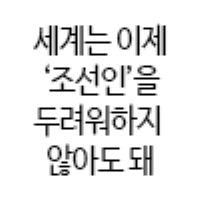
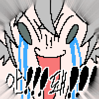

참다랑어는 국제수산기구(ICCAT) 및 중서부태평양수산위원회(WCPFC) 규제를 받는 어종으로, 쿼터 초과 시 상업 유통은 물론 자가소비도 금지된다.
ㅇㅇ · 11.27 17:08:30
참치 버린놈들 꼭 지옥가길
↳ 답글 · ㅇㅇ · 11.27 17:14:54
호로나이 수산부 대표 요시키 카와라다: "지금 바로 바다로 나가서 버리러 갑니다(버리겠습니다)."
잡은 참치는 그대로 버려지고 있습니다. 도대체 무슨 일이 벌어지고 있는 거죠?
블루핀 참치가 전국적으로 풍부한 어획량이 되어가던 중, 뭔가 이례적인 일이 벌어지고 있었다.
호로나이 수산부 대표 가와하라다 요시키: "이미 협동조합이 어획할 수 있는 양에 도달했습니다. 그래서 더 이상 상륙할 수 없습니다. "지금 바다로 가서 버릴게요(버리고요)."
고정 그물에 걸린 참치는 약 10만 엔에 팔 수 있습니다. 하지만 집에 가져가면 법을 어길 수 있으니, 어쩔 수 없이 바다에 던져버릴 수밖에 없습니다.
이 지역 에서는 어획 금지가 해제된 지 단 하루 만에 어획 한도에 도달했습니다.
ㅇㅇ · 11.27 17:08:42
가격이 아니라 쿼터제와 한국의 욕심 때문임
한국이 잡을 수 있는 양이 정해져 있는데
그거 못채우면 손해라고 생각해서 무작정 많이 잡고 넘은 선 만큼 폐기하는 거
뭐 쿼터 늘려달라는 건 어림도 없고
한국은 참치 서식지가 극히 일부 지역에 밖에 없는 나라인데
쿼터를 받는 것만 해도 감지덕지라
↳ 답글 · ㅇㅇ · 11.27 17:58:49
↳ 답글 · 티뀨 · 11.27 19:00:42
걍 좆까고 잡으면안댐? 개재맹 머함?
↳ 답글 · ㅇㅇ · 11.27 19:30:07
? 못 채우면 손해 맞지
더 잡아서 더 팔 수 있는데 왜 쿼터 끝까지 안채움
↳ 답글 · ㅇㅇ · 11.27 20:17:54
이거 다른 기사로 본거 있는데 올해 쿼터 이미 존나 늘렸던거 그 이상으로 잡혀서 폐기인거
ㅇㅇ · 11.27 17:10:52
나라가 거대한 위수지역이다 ㅋㅋㅋㅋㅋㅋㅋㅋㅋㅋㅋㅋㅋㅋㅋㅋㅋㅋㅋㅋㅋㅋㅋㅋㅋㅋㅋㅋ 나라가 거대한 위수지역이다 ㅋㅋㅋㅋㅋㅋㅋㅋㅋㅋㅋㅋㅋㅋㅋㅋㅋㅋㅋㅋㅋㅋㅋㅋㅋㅋㅋㅋ 나라가 거대한 위수지역이다 ㅋㅋㅋㅋㅋㅋㅋㅋㅋㅋㅋㅋㅋㅋㅋㅋㅋㅋㅋㅋㅋㅋㅋㅋㅋㅋㅋㅋ 나라가 거대한 위수지역이다 ㅋㅋㅋㅋㅋㅋㅋㅋㅋㅋㅋㅋㅋㅋㅋㅋㅋㅋㅋㅋㅋㅋㅋㅋㅋㅋㅋㅋ 나라가 거대한 위수지역이다 ㅋㅋㅋㅋㅋㅋㅋㅋㅋㅋㅋㅋㅋㅋㅋㅋㅋㅋㅋㅋㅋㅋㅋㅋㅋㅋㅋㅋ 나라가 거대한 위수지역이다 ㅋㅋㅋㅋㅋㅋㅋㅋㅋㅋㅋㅋㅋㅋㅋㅋㅋㅋㅋㅋㅋㅋㅋㅋㅋㅋㅋㅋ 나라가 거대한 위수지역이다 ㅋㅋㅋㅋㅋㅋㅋㅋㅋㅋㅋㅋㅋㅋㅋㅋㅋㅋㅋㅋㅋㅋㅋㅋㅋㅋㅋㅋ 나라가 거대한 위수지역이다 ㅋㅋㅋㅋㅋㅋㅋㅋㅋㅋㅋㅋㅋㅋㅋㅋㅋㅋㅋㅋㅋㅋㅋㅋㅋㅋㅋㅋ 나라가 거대한 위수지역이다 ㅋㅋㅋㅋㅋㅋㅋㅋㅋㅋㅋㅋㅋㅋㅋㅋㅋㅋㅋㅋㅋㅋㅋㅋㅋㅋㅋㅋ 나라가
↳ 답글 · ㅇㅇ · 11.27 17:21:15
참다랑어는 자원 보호를 위해 해역별로 중서부태평양수산위원회(WCPFC)나 대서양참치보존위원회(ICCAT) 같은 지역수산관리기구(RFMO)가 매년 회원국별 어획 한도(쿼터)를 배정해 엄격히 관리합니다.
쿼터 초과 시 전량 폐기 및 자가소비 금지 정해진 지역·업종별 쿼터가 소진된 이후에는 포획 및 위판 금지 명령이 내려지며, 정치망 등에 우연히 걸려 죽은 채 올라온 혼획물이라도 유통, 보관, 자가소비가 모두 금지되어 전량 폐기하거나 보고 후 방류해야 합니다. 자가소비나 사적 거래를 허용할 경우 불법·비보고·비규제(IUU) 어업으로 간주되어 국제 제재를 받을 수 있기 때문입니다.
ㅇㅇ · 11.27 17:10:54
나라가 거대한 위수지역이다 ㅋㅋㅋㅋㅋㅋㅋㅋㅋㅋㅋㅋㅋㅋㅋㅋㅋㅋㅋㅋㅋㅋㅋㅋㅋㅋㅋㅋ 나라가 거대한 위수지역이다 ㅋㅋㅋㅋㅋㅋㅋㅋㅋㅋㅋㅋㅋㅋㅋㅋㅋㅋㅋㅋㅋㅋㅋㅋㅋㅋㅋㅋ 나라가 거대한 위수지역이다 ㅋㅋㅋㅋㅋㅋㅋㅋㅋㅋㅋㅋㅋㅋㅋㅋㅋㅋㅋㅋㅋㅋㅋㅋㅋㅋㅋㅋ 나라가 거대한 위수지역이다 ㅋㅋㅋㅋㅋㅋㅋㅋㅋㅋㅋㅋㅋㅋㅋㅋㅋㅋㅋㅋㅋㅋㅋㅋㅋㅋㅋㅋ 나라가 거대한 위수지역이다 ㅋㅋㅋㅋㅋㅋㅋㅋㅋㅋㅋㅋㅋㅋㅋㅋㅋㅋㅋㅋㅋㅋㅋㅋㅋㅋㅋㅋ 나라가 거대한 위수지역이다 ㅋㅋㅋㅋㅋㅋㅋㅋㅋㅋㅋㅋㅋㅋㅋㅋㅋㅋㅋㅋㅋㅋㅋㅋㅋㅋㅋㅋ 나라가 거대한 위수지역이다 ㅋㅋㅋㅋㅋㅋㅋㅋㅋㅋㅋㅋㅋㅋㅋㅋㅋㅋㅋㅋㅋㅋㅋㅋㅋㅋㅋㅋ 나라가 거대한 위수지역이다 ㅋㅋㅋㅋㅋㅋㅋㅋㅋㅋㅋㅋㅋㅋㅋㅋㅋㅋㅋㅋㅋㅋㅋㅋㅋㅋㅋㅋ 나라가 거대한 위수지역이다 ㅋㅋㅋㅋㅋㅋㅋㅋㅋㅋㅋㅋㅋㅋㅋㅋㅋㅋㅋㅋㅋㅋㅋㅋㅋㅋㅋㅋ 나라가
ㅇㅇ · 11.27 17:10:56
나라가 거대한 위수지역이다 ㅋㅋㅋㅋㅋㅋㅋㅋㅋㅋㅋㅋㅋㅋㅋㅋㅋㅋㅋㅋㅋㅋㅋㅋㅋㅋㅋㅋ 나라가 거대한 위수지역이다 ㅋㅋㅋㅋㅋㅋㅋㅋㅋㅋㅋㅋㅋㅋㅋㅋㅋㅋㅋㅋㅋㅋㅋㅋㅋㅋㅋㅋ 나라가 거대한 위수지역이다 ㅋㅋㅋㅋㅋㅋㅋㅋㅋㅋㅋㅋㅋㅋㅋㅋㅋㅋㅋㅋㅋㅋㅋㅋㅋㅋㅋㅋ 나라가 거대한 위수지역이다 ㅋㅋㅋㅋㅋㅋㅋㅋㅋㅋㅋㅋㅋㅋㅋㅋㅋㅋㅋㅋㅋㅋㅋㅋㅋㅋㅋㅋ 나라가 거대한 위수지역이다 ㅋㅋㅋㅋㅋㅋㅋㅋㅋㅋㅋㅋㅋㅋㅋㅋㅋㅋㅋㅋㅋㅋㅋㅋㅋㅋㅋㅋ 나라가 거대한 위수지역이다 ㅋㅋㅋㅋㅋㅋㅋㅋㅋㅋㅋㅋㅋㅋㅋㅋㅋㅋㅋㅋㅋㅋㅋㅋㅋㅋㅋㅋ 나라가 거대한 위수지역이다 ㅋㅋㅋㅋㅋㅋㅋㅋㅋㅋㅋㅋㅋㅋㅋㅋㅋㅋㅋㅋㅋㅋㅋㅋㅋㅋㅋㅋ 나라가 거대한 위수지역이다 ㅋㅋㅋㅋㅋㅋㅋㅋㅋㅋㅋㅋㅋㅋㅋㅋㅋㅋㅋㅋㅋㅋㅋㅋㅋㅋㅋㅋ 나라가 거대한 위수지역이다 ㅋㅋㅋㅋㅋㅋㅋㅋㅋㅋㅋㅋㅋㅋㅋㅋㅋㅋㅋㅋㅋㅋㅋㅋㅋㅋㅋㅋ 나라가
ㅇㅇ · 11.27 17:11:31
얼마나 잡았는지 실시간으로 파악 못 하나 쿼터 넘기고도 잡은 거잖아
ㅇㅇ · 11.27 17:11:34
진짜 저런거 볼때마다 한국이라는 나라가 너무 역겹다 ㅋㅋ
↳ 답글 · ㅇㅇ · 11.27 17:15:10
참다랑어는 국제수산기구(ICCAT) 및 중서부태평양수산위원회(WCPFC) 규제를 받는 어종으로, 쿼터 초과 시 상업 유통은 물론 자가소비도 금지된다.
참다랑어는 국제수산기구(ICCAT) 및 중서부태평양수산위원회(WCPFC) 규제를 받는 어종으로, 쿼터 초과 시 상업 유통은 물론 자가소비도 금지된다.
↳ 답글 · ㅇㅇ · 11.27 17:17:53
@ㅇㅇ(183.101) 결국 이 갈등은 "이미 죽은 고기를 버리는 비효율을 감수하더라도 남획 유인을 원천 차단할 것인가"와 "현실의 생태계 변화에 맞춰 버려지는 자원을 합리적으로 활용할 것인가"라는 정책적 딜레마에서 비롯됩니다. <- 문제는 20~30년 전 처럼 씨가 말라버리는 상황이 안온다는거임 수온이 지랄나서
↳ 답글 · ㅇㅇ · 11.27 17:19:39
국제법으로 금지된걸 조선 따리보고 어쩌라고
ㅇㅇ · 11.27 17:13:58
쿼터가 작으면 적게잡으면된다고 씨발 조센징새끼들아 도대체 뭔 말도 안되는 소리를 하고있는거야
↳ 답글 · ㅇㅇ · 11.27 17:14:36
애초에 어선 대부분이 트롤망이라 참치올라오는지 멸치올라오는지 ㅈ까고 잡혀서 답없음
↳ 답글 · ㅇㅇ · 11.27 17:18:05
호로나이 수산부 대표 요시키 카와라다: "지금 바로 바다로 나가서 버리러 갑니다(버리겠습니다)."
잡은 참치는 그대로 버려지고 있습니다. 도대체 무슨 일이 벌어지고 있는 거죠?
블루핀 참치가 전국적으로 풍부한 어획량이 되어가던 중, 뭔가 이례적인 일이 벌어지고 있었다.
호로나이 수산부 대표 가와하라다 요시키: "이미 협동조합이 어획할 수 있는 양에 도달했습니다. 그래서 더 이상 상륙할 수 없습니다. "지금 바다로 가서 버릴게요(버리고요)."
고정 그물에 걸린 참치는 약 10만 엔에 팔 수 있습니다. 하지만 집에 가져가면 법을 어길 수 있으니, 어쩔 수 없이 바다에 던져버릴 수밖에 없습니다.
이 지역 에서는 어획 금지가 해제된 지 단 하루 만에 어획 한도에 도달했습니다.
piyo · 11.27 17:14:47
아니 미친;;
ㅇㅇ · 11.27 17:15:17
폐기?.. 미친새끼들 아녀 내 입에 폐끼해달라고 시발것들아
↳ 답글 · ㅇㅇ · 11.27 17:16:00
참다랑어는 국제수산기구(ICCAT) 및 중서부태평양수산위원회(WCPFC) 규제를 받는 어종으로, 쿼터 초과 시 상업 유통은 물론 자가소비도 금지된다.
↳ 답글 · ㅇㅇ · 11.27 17:18:38
@ㅇㅇ(183.101) 결국 이 갈등은 "이미 죽은 고기를 버리는 비효율을 감수하더라도 남획 유인을 원천 차단할 것인가"와 "현실의 생태계 변화에 맞춰 버려지는 자원을 합리적으로 활용할 것인가"라는 정책적 딜레마에서 비롯됩니다. <- 문제는 20~30년 전 처럼 씨가 말라버리는 상황이 안온다는거임 수온이 지랄나서
↳ 답글 · ㅇㅇ · 11.27 17:19:32
국제법으로 금지된걸 조선 따리보고 어쩌라고
ㅇㅇ · 11.27 17:15:25
걍 끌어 올렸는데 인제 고등어 오징어 이딴거 없어지고 열대어들이 대체하는거임
ㅇㅇ · 11.27 17:17:35
ㅁ;ㅊ;ㄴ새
ㅇㅇ · 11.27 17:19:02
쿼터늘려주면 냉동창고지어서 다 저장하고 가격오를때까지 기다리겠지
멍청한새끼 · 11.27 17:21:12
참다랑어 국제법상 1200톤 이상 잡으면 다 풀어줘야됨
풀어주는것도 말이 풀어주는거지 이미 그물에서 엄청난 힘을 소모해서 다 뒤지고 사실상 폐기임
부드러운곰탱이 · 11.27 17:25:45
장어도 그렇지 않나? 여전히 비싸던데
상금이 · 11.27 17:25:51
낙농업자들 다 죽는다면서 우유 땅에 버리는거 생각나노
↳ 답글 · ㅇㅇ · 11.27 17:28:42
자원을 보호하기 위해 어획 할당량이 설정되어 있으며, 이 한도를 초과하면 그물에 걸린 참다랑어조차 상륙할 수 없습니다. WCPFC(서태평양참치 위원회)와 같은 국제 자원 관리 체계에서는 국가별 어획 할당량이 과학적 증거를 기반으로 설정되며, 일본을 포함한 국가들은 이 할당량을 준수해야 합니다.
ㅇㅇ · 11.27 17:31:25
폐기시키면 참치가 부활하니?
ORZ · 11.27 17:33:23
저거중 일부만 풀려도 X지 같은 대방어 가격 폭락할듯
ㅇㅇㅇ · 11.27 17:33:52
가격내려갔으면 싸게 풀어서 평소 맛보지못한 서민들 맛보게해주고 참치 맛알게해서 나중에도 찾게만들어야지 - dc App
망한인생 · 11.27 17:36:21
치킨도 그렇고 개조센답다
ㅇㅇ · 11.27 17:36:53
저럴거면 대체 왜 쳐 잡음?? 생명 함부로 다루는 꼬라지 답도 없네
ㅇㅇ · 11.27 17:37:18
일본 참치 포획 그만해라!(전량 폐기하며)
↳ 답글 · ㅇㅇ · 11.27 17:37:23
xcsdf · 11.27 17:40:24
폐기할거면 왜잡았어 시팔ㅋㅋㅋㅋㅋㅋㅋㅋㅋㅋㅋㅋㅋㅋㅋㅋㅋㅋㅋㅋㅋㅋㅋㅋㅋㅋㅋㅋㅋㅋㅋㅋㅋㅋㅋ
↳ 답글 · ㅇㅇ · 11.27 17:52:26
물고기맘
ㅇㅇ · 11.27 17:43:26
이거 어획 할당량 때문에 폐기한거 아님?
ㅇㅇ · 11.27 17:47:34
씨발 좆간
ㅇㅇ · 11.27 17:47:52
아 개병신들 너무많아서 정리해드림
↳ 답글 · ㅇㅇ · 11.27 17:48:48
참치는 해역과 해류마다 정해진 쿼터제로 잡는거임
↳ 답글 · ㅇㅇ · 11.27 17:50:15
그럼 그 조율을 어떻게하느냐? 같은 해역을쓰는 나라들과 조율했어야함
과거에 바다가 차가울때 500t으로 정해놓은게 현재까지 발목잡는거
근데 조오온나 궁금한건데 그럼 쿼터제는 이미 훨씬전에 넘었을텐데 왜 잡음??
막 참치가 육지까지 뛰어 올라왔나봄??
↳ 답글 · ㅇㅇ · 11.27 19:15:11
@ㅇㅇ(221.141) 다른거 잡으려고 그물쳐놓은거에 같이 잡히는거임 참치 잡으려고 그물쳐놓은게 아니라
↳ 답글 · ㅇㅇ · 11.27 19:20:20
@ㅇㅇ(115.92) 모두가 그렇게 생각하지만 일본같이 본인한테 유리한 입장에선 유지해야 이득이니까 유지되는거지
ㅇㅇ · 11.27 17:52:15
이건 운반비가 더나와서
ㅇㅇ · 11.27 18:03:56
생명은 생명대로 학살하고 돈은 벌고 싶고 정신나갔구나 진짜 - dc App
공정성장 · 11.27 18:07:29
ㅇㅇ · 11.27 18:13:22
서울 우유 대한민국 낙농업 시즌 2 비싸게 못 팔거면 소멸을 선택 ㅋㅋ
↳ 답글 · ㅇㅇ · 11.27 18:13:33
ㅇㅇ · 11.27 18:26:34
이게 다 노무현 때문이다
ㅇㅇ · 11.27 18:30:10
자원을 보호하기 위해 쿼터제를 수행한다고 하지만 저렇게 폐기하는게 자원을 보호하기는 하냐? 남획을 방지하기 위해서 폐기라는 강수를 둔 거겠지만, 저렇게 폐기가 시작되면 아예 어업을 중단시키도록 통합관리해야지 이건 되고 저건 안돼 하니까 문제인거임. 이게 우리나라 법도 똑같은게 나열주의를 채택하다보니까 나열된 것만 안하면 다른건 다 해도 됨. 쿼터제도 나열된 것만 폐기하면 되니까 다른거 잡는다고 많이 잡히는건 계속 폐기하는거임.
ㅇㅇ · 11.27 18:32:25
쿼터제은 구실이고 그냥 참치값 안내릴려고 버리는거임 ㅋㅋ
뭐 어떻게든 소비하게 하면 그핑계로 잡으니까 폐기한다고??
그 참치가격을 안쳐주면 그핑계도 사라지는건데? ㅋㅋㅋ
그냥 나라가 거둬가서 고아원 노아원 이런데다 참치파티열어주면되는건데
그건 하기 싫고 그냥 내다버리는거임
↳ 답글 · ㅇㅇ · 11.27 19:22:31
고아원을 나눠주든 동물사료로 쓰던 쓰는거 자체가 아예 불법인데 병신새낀가
↳ 답글 · ㅇㅇ · 11.27 19:23:38
니말처럼 하는게 허용되면 죄다 사실 고아원 나눠주려고 잡았어요 하고 뒷구멍으로 페이백해서 팔아먹지 국제법 하는새끼들이 개병신 좃호구인줄 아나
ㅇㅇ · 11.27 18:34:26
병신뇌절 환경충 새끼들은 지들이 뒤지는게 더 환경에 이로운건 흐린눈함
ㅇㅇ · 11.27 18:41:14
가격 폭락으로 폐기가 아니라 할당량 때문에 그럼
ㅇㅇ · 11.27 18:46:12
우유도 싸지거나 많으면 싹다 하수구행~
ㅇㅇ · 11.27 18:47:44
걍 얼려서 오래 보관하면 안되나?
ㅇㅇ · 11.27 18:49:16
자본주의 경제체제의 폐해
NyangMoji · 11.27 18:50:15
ㅇㅇ · 11.27 18:50:51
쿼터제 ㅇㅈㄹ하면서 댓글알바 열심히하네
ㅇㅇ · 11.27 18:56:59
쿼터제 제한 푸는 큰 그림 그릴라고 일부러 더잡고 폐기하나봄
ㅇㅇ · 11.27 18:56:59
자본주의 = 낭비
ㅇㅇ · 11.27 19:02:33
네가 만일 네입으로
예수를 주로 시인하며
하나님께서 그를 죽은 자 가운데서 살리신 것을
네 마음에 믿으면 구원을 얻으리니,
사람이 마음으로 믿어 의에 이르고
입으로 시인하여 구원에 이르느니라
로마서 10:9-10
주님이신 예수님 믿고 구원받으세요
ㅇㅇ · 11.27 19:03:06
그저 인간 길냥이국가..개조선
↳ 답글 · ㅇㅇ · 11.27 19:04:21
중국 일본 미국에 차례대로 은을 입어놓고 배은망덕하게 욕하는거까지 길냥이같노 ㅋㅋ
ㅇ · 11.27 19:08:28
기본소득ㅋㅋ
ㅇㅇ · 11.27 19:09:35
공산주의 폐혜임 ㅋ
ㅇㅇ · 11.27 19:18:17
참치 쿼터땜에 강제로 폐기하는건데 먼 재명이를 찾고 경상도를 찾아. 병신들인가? 원종이 가서 따져라 사실상 일본이 정하는거임
참다랑어는 자원 보호를 위해 해역별로 중서부태평양수산위원회(WCPFC)나 대서양참치보존위원회(ICCAT) 같은 지역수산관리기구(RFMO)가 매년 회원국별 어획 한도(쿼터)를 배정해 엄격히 관리합니다.
쿼터 초과 시 전량 폐기 및 자가소비 금지 정해진 지역·업종별 쿼터가 소진된 이후에는 포획 및 위판 금지 명령이 내려지며, 정치망 등에 우연히 걸려 죽은 채 올라온 혼획물이라도 유통, 보관, 자가소비가 모두 금지되어 전량 폐기하거나 보고 후 방류해야 합니다. 자가소비나 사적 거래를 허용할 경우 불법·비보고·비규제(IUU) 어업으로 간주되어 국제 제재를 받을 수 있기 때문입니다.
이응 · 11.27 16:03:12
쿼터없자나 - dc App
ㅇㅇ · 11.27 16:03:48
쿼터낮음
정상:쿼터가 낮으니 적게잡음
조센징:쿼터가 낮으니 많이 잡고 다 갖다버리는거 보여주면서 시위함
↳ 답글 · ㅇㅇ · 11.27 16:06:55
호로나이 수산부 대표 요시키 카와라다: "지금 바로 바다로 나가서 버리러 갑니다(버리겠습니다)."
잡은 참치는 그대로 버려지고 있습니다. 도대체 무슨 일이 벌어지고 있는 거죠?
블루핀 참치가 전국적으로 풍부한 어획량이 되어가던 중, 뭔가 이례적인 일이 벌어지고 있었다.
호로나이 수산부 대표 가와하라다 요시키: "이미 협동조합이 어획할 수 있는 양에 도달했습니다. 그래서 더 이상 상륙할 수 없습니다. "지금 바다로 가서 버릴게요(버리고요)."
고정 그물에 걸린 참치는 약 10만 엔에 팔 수 있습니다. 하지만 집에 가져가면 법을 어길 수 있으니, 어쩔 수 없이 바다에 던져버릴 수밖에 없습니다.
이 지역 에서는 어획 금지가 해제된 지 단 하루 만에 어획 한도에 도달했습니다.
↳ 답글 · ㅇㅇ · 11.27 16:10:54
전국 각지에서 어민들이 제 깜냥대로 쳐잡으니 쿼터 넘었나 안넘었나 실시간으로 나오질 않는다고
↳ 답글 · ㅇㅇ · 11.27 16:11:20
쿼터 넘어간걸 안 시점에는 그물 안에 있던 참치 다 풀어야 하는데 이미 뒈져있는거고
↳ 답글 · ㅇㅇ · 11.27 16:59:39
쿼터를 알려면 잡아 올려야 아는데 그걸 어찌아노 시발아 ㅋㅋㅋㅋㅋ
그리고 이미 그물에 걸린거면 다 죽은거라 방생도 안되고
그렇다고 그물 적게 쳐서 수익성 안나면 징징대서 국가서 세금 쓰라 징징할거 니가 책임질거노
S＆P500 · 11.27 16:03:51
지금도 세상에 식재료 과잉생산으로 폐기되는 양만해도 지구 뒤덮겠는데 AI 시대오면 다 평등하게 나눠주는거 확실함???? 좆구라핑아님?????
ㅇㅇ · 11.27 16:03:58
팩트) 동해서 잡히는건 다 좆만한 애새끼들이고 지방도 안올라서 맛대가리 없을 뿐만 아니라 다랑어류는 급속냉동시키는게 중요해서 급속냉동장치가 필수인데 일반배에는 일반냉동고밖에 없고 이런 고급장치가 없어서 잡아도 금방 상해서 못먹는 상태가 된다. 애초에 질이 떨어지는 물고기를 고급장비를 들여 보존할 필요가 없으니 계륵일뿐이다. 구라 같으면 ai에 댓글넣어봐
ㅇㅇ · 11.27 16:04:35
ㅇㅇ · 11.27 16:06:28
과연 잔짜 폐기 됐을까? 급냉해뒀다가 나중에 폭리 남기고 팔지.. 여기는 머한민국
ㅇㅇ · 11.27 16:08:34
낙농업센징 - dc App
ㅇㅇ · 11.27 16:08:46
먹지도 않을거 욕심만 그득
ㅇㅇ · 11.27 16:10:11
어획량 정해두니까 일단 잡고 보는거지ㅋㅋ 유통비용 안나올거 같으면 폐기하고
ㅇㅇ · 11.27 16:10:36
일본은 참치풍년이면 진짜 내려가던데 이나라는 뭐가 문젤까
↳ 답글 · ㅇㅇ · 11.27 16:12:31
일본에서는 최근 참다랑어 풍어가 이어지면서 홋카이도와 도호쿠 지방 연안을 중심으로 어획 한도를 초과하는 사태가 속출하고 있다. 도호쿠 지방의 한 어업협동조합은 지난 6월 정치망에 걸린 참다랑어 6000마리 중 99% 이상을 규제 때문에 그대로 방류해야 했다고 밝혔다.
↳ 답글 · ㅇㅇ · 11.27 16:14:49
@ㅇㅇ(183.101) 난 버리네 긴빠이하네를 말하는게 아니고 실제 참치살이나 참치관련 외식 메뉴가 싹다 내려갔던걸 말하는거임
↳ 답글 · ㅇㅇ · 11.27 16:18:06
참다랑어를 두고 한국과 일본이 국제회의에서 정면 충돌했다. 현재 일본의 대형 참다랑어 어획 쿼터는 약 8400t, 대만 2947t이고, 한국은 약 500t에 불과하다.
↳ 답글 · ㅇㅇ · 11.27 16:18:48
국제적으로 정해진 쿼터 때문에 국내 어민들은 참다랑어가 그물에 걸려도 무한정 잡을 수 없다. 한국 정부는 수십 년 전 어획 실적에 근거한 배분 방식이 달라진 어장 환경을 제대로 반영하지 못한다고 주장해왔다.
↳ 답글 · ㅇㅇ · 11.27 16:20:12
@ㅇㅇ(183.101) 고장난 라디오되버렸네
이번년도에도 풍어라서 실제로 가격 내려가고 뉴스나오고 그랬음 sns같은데서 대뱃살 100엔내려갔다고 올라오고
↳ 답글 · ㅇㅇ · 11.27 16:22:35
@ㅇㅇ(183.101) 유통상 마진이 안남으니까 아예 전국에서 가격이 내려가진않았겠지만 아예 내려갔다는 얘기조차 안나오는 우리나라랑 다르게
니이가타니 야마가타니 특정지역에서 존나싸졌다고 좋아하고 다큐인가 뉴스인가 나오기도했음
애초에 실베에도 올라왔었을거
↳ 답글 · ㅇㅇ · 11.27 16:23:56
풍어여도 할당량 채우면 더이상 못잡으니까 한계가 있다고 조선에 할당된 쿼터가 일본 1/17이라 공급이 잘될 수가 없다고 시발아
푸른다랑어가 엄청나게 잡히자, '이걸 풀어놓는 건 낭비야', '더 잡게 해줘'라는 목소리가 들리지만... 일본의 어업 생산은 '사상 최저치'에 있으며 붕괴 직전에 와 있어 비정상적인 현실을 보여줍니다 クロマグロ大漁で｢放流はもったいない｣｢もっと獲らせて｣という声もあるが…日本の漁業生産量｢過去最低｣で崩壊寸前の異常な実態 https://toyokeizai.net/articles/-/947573?display=b
고정 그물에 들어간 참치는 어업 당국에 의해 바다에 방류되었습니다. 이러한 보도는 계속되고 있습니다. "우리가 그렇게 애써 잡아온 물고기들이 왜 바다로 다시 돌아와야 하지?" 많은 사람들이 이 점을 궁금해할 수도 있습니다.
↳ 답글 · ㅇㅇ · 11.27 16:14:08
보통 생선은 상륙되어 시장에 유통됩니다. 그러나 자원을 보호하기 위해 어획 할당량이 설정되어 있으며, 이 한도를 초과하면 그물에 걸린 참다랑어조차 상륙할 수 없습니다. WCPFC(서태평양참치 위원회)와 같은 국제 자원 관리 체계에서는 국가별 어획 할당량이 과학적 증거를 기반으로 설정되며, 일본을 포함한 국가들은 이 할당량을 준수해야 합니다.
ㅇㅇ · 11.27 16:15:31
적게잡힌다고 가격올리는건 어쩔수없는거고 많이 잡았다고 또 폐기시키는건 어쩔수없노?
↳ 답글 · ㅇㅇ · 11.27 16:15:53
참다랑어는 자원 보호를 위해 해역별로 중서부태평양수산위원회(WCPFC)나 대서양참치보존위원회(ICCAT) 같은 지역수산관리기구(RFMO)가 매년 회원국별 어획 한도(쿼터)를 배정해 엄격히 관리합니다.
쿼터 초과 시 전량 폐기 및 자가소비 금지 정해진 지역·업종별 쿼터가 소진된 이후에는 포획 및 위판 금지 명령이 내려지며, 정치망 등에 우연히 걸려 죽은 채 올라온 혼획물이라도 유통, 보관, 자가소비가 모두 금지되어 전량 폐기하거나 보고 후 방류해야 합니다. 자가소비나 사적 거래를 허용할 경우 불법·비보고·비규제(IUU) 어업으로 간주되어 국제 제재를 받을 수 있기 때문입니다.
ㅇㅇ · 11.27 16:16:06
저새끼들을 잡고 폐기시키자
ㅇㅇ · 11.27 16:18:04
180톤이면 데드존 형성된다는데?
그냥 통조림만드는게 나을듯
ㅇㅇ · 11.27 16:18:16
씨이발 내 도로초밥이
↳ 답글 · ㅇㅇ · 11.27 16:18:26
향격쳐 · 11.27 16:18:32
ㅇㅇ · 11.27 16:18:56
인구 절벽이니 흰우유처럼 참치 수요가 고인물되서 비싸게 넘길려는 건데 - dc App
ㅇㅇ · 11.27 16:19:04
쿼터제 있어서 버려야 하는데 현장에서는 잡히면 실적이니 일단 잡고보자 이런건가
ㅇㅇ · 11.27 16:23:54
어부들 순장시켜야지
ㅇㅇ · 11.27 16:25:52
폐기할거면 방류해라 씹년들아 - dc App
ㅇㅇ · 11.27 16:26:17
시발년들이 ㅋㅋㅋㅋㅋㅋㅋㅋㅋㅋ
ㅇㅇ · 11.27 16:27:01
헬센 솔루션
↳ 답글 · ㅇㅇ · 11.27 16:27:15
호로나이 수산부 대표 요시키 카와라다: "지금 바로 바다로 나가서 버리러 갑니다(버리겠습니다)."
잡은 참치는 그대로 버려지고 있습니다. 도대체 무슨 일이 벌어지고 있는 거죠?
블루핀 참치가 전국적으로 풍부한 어획량이 되어가던 중, 뭔가 이례적인 일이 벌어지고 있었다.
호로나이 수산부 대표 가와하라다 요시키: "이미 협동조합이 어획할 수 있는 양에 도달했습니다. 그래서 더 이상 상륙할 수 없습니다. "지금 바다로 가서 버릴게요(버리고요)."
고정 그물에 걸린 참치는 약 10만 엔에 팔 수 있습니다. 하지만 집에 가져가면 법을 어길 수 있으니, 어쩔 수 없이 바다에 던져버릴 수밖에 없습니다.
이 지역 에서는 어획 금지가 해제된 지 단 하루 만에 어획 한도에 도달했습니다.
ㅇㅇ · 11.27 16:30:36
저분들도 먹고 살아야지 이해 됨
ㅇㅇ · 11.27 16:32:10
나줘 ㅅㅂ
ㅇㅇ · 11.27 16:32:20
저건 쿼터있어서 폐기하는걸텐데 우유 갖다 쏟아버리던 앰뒤련들이랑은 다른 경우임
히이잉 · 11.27 16:33:09
대구경북일베 · 11.27 16:34:14
정상인 - 쿼터 있어서 어쩔 수 없이 폐기하는 건데 그게 문제냐? 대구경북일베 - 이게 다 이재명 탓..
참다랑어는 자원 보호를 위해 해역별로 중서부태평양수산위원회(WCPFC)나 대서양참치보존위원회(ICCAT) 같은 지역수산관리기구(RFMO)가 매년 회원국별 어획 한도(쿼터)를 배정해 엄격히 관리합니다.
쿼터 초과 시 전량 폐기 및 자가소비 금지 정해진 지역·업종별 쿼터가 소진된 이후에는 포획 및 위판 금지 명령이 내려지며, 정치망 등에 우연히 걸려 죽은 채 올라온 혼획물이라도 유통, 보관, 자가소비가 모두 금지되어 전량 폐기하거나 보고 후 방류해야 합니다. 자가소비나 사적 거래를 허용할 경우 불법·비보고·비규제(IUU) 어업으로 간주되어 국제 제재를 받을 수 있기 때문입니다.
ㅇㅇ · 11.27 16:36:19
가격내리고 파는거보가 갖다버리는게 이득임?
우유나 농수산물 남으면 왜 전량 폐기하는거임?
↳ 답글 · ㅇㅇ · 11.27 16:38:11
그게아니고 참치는 대형어류라 개체수가 많지않아서 한해에 잡을수있는 쿼터가 나라마다 있음. 그거 초과하면 절대 못팔고 먹지도 못하게함. 어떻게든 소비할수 있게 놔두면 다잡아서 멸종하잖아. 아까워도 어쩔수없음 - dc App
@ㅇㅇ(115.90) 그럼 잡은거 자체를 처벌해야하지않음?
그물이 좀더 걸린게 180톤이나 되는건 말이 안되는거같은데 ㅋㅋ
↳ 답글 · ㅇㅇ · 11.27 18:39:12
@ㅇㅇ(220.121) 일단 참치 더이상 못 잡는다는걸 인지하면 일부러 참치를 잡을 이유가 없지 인력낭비 시간낭비 그물낭비인데
무슨 참치 잡아죽이면서 희열느끼는 병신새끼 아닌 이상
참치를 몰래 팔다 처벌하는건 몰라도 다른거 잡을라고 그물쳐놓은거에 참치 낚인걸 와 처벌하노
ㅇㅇ · 11.27 16:37:22
씹 센 징
↳ 답글 · ㅇㅇ · 11.27 16:39:43
참다랑어는 자원 보호를 위해 해역별로 중서부태평양수산위원회(WCPFC)나 대서양참치보존위원회(ICCAT) 같은 지역수산관리기구(RFMO)가 매년 회원국별 어획 한도(쿼터)를 배정해 엄격히 관리합니다.
쿼터 초과 시 전량 폐기 및 자가소비 금지 정해진 지역·업종별 쿼터가 소진된 이후에는 포획 및 위판 금지 명령이 내려지며, 정치망 등에 우연히 걸려 죽은 채 올라온 혼획물이라도 유통, 보관, 자가소비가 모두 금지되어 전량 폐기하거나 보고 후 방류해야 합니다. 자가소비나 사적 거래를 허용할 경우 불법·비보고·비규제(IUU) 어업으로 간주되어 국제 제재를 받을 수 있기 때문입니다.
ㅇㅇ · 11.27 16:39:29
소추 윤종단 부들부들 ㅋㅋㅋ
ㅇㅇ · 11.27 16:44:45
농부랑 비교하지마라 농부는 씨발 자기가 땅 일구고 씨앗뿌리고 농약뿌리고 뭐 가꾸고 산짐승들 퇴치해야되고 걍 들어가는 비용이 다른데
어부 이새낀 그냥 배에 기름넣고 나가서 그물던졌다가 올리면 끝인 새끼들인데
ㅇㅇ · 11.27 16:45:45
죄없는 참치는 전부 사체로 만들고 뭐하자는 짓이냐 진짜 조센징스럽네
유부 · 11.27 16:47:10
이건 어획량 제한때문아님?
ㅇㅇ · 11.27 16:47:50
저건 쿼터제 때문이잖아 병신들아
이쪽 해협 참치 쿼터는 일본이 싹 다 가져갔으니 욕을 하려거든 일본에다 해야지 어부가 왜 욕을 먹어야 하냐
상식도 없는 새끼들이 욕을 해야 할 대상도 구분 못 하네 아오 좆병신들
↳ 답글 · ㅇㅇ · 11.27 16:49:11
재미로 잡아다가 죽이노 길냥이같은 종족 조센징
↳ 답글 · ㅇㅇ · 11.27 16:52:22
쿼터제 예상하고 덜잡았어야하는거 아님?
법망 피하려고 편법하는거잖아
↳ 답글 · ㅇㅇ · 11.27 16:54:29
@ㅇㅇ(106.101) 한국 근해에서 참치를 대상어종으로 하는 상업용 어업활동은 없어 애초에 참치 잡을거면 태평양으로 가지 쿼터 때문에 팔수도 없는 한국에서 뭐하러 잡아 덜잡고 더잡고 그딴거 없고 참치는 아예 대상어종이 아니야 고등어 잡으려고 친 그물에 참치가 잡힐 뿐이다
↳ 답글 · ㅇㅇ · 11.27 17:58:21
@ㅇㅇ(175.203) 그 우연히 잡히는걸로 대놓고 잡는 일본보다 고래를 더 많이 잡죠
바닷사람한테 우연이 어딨냐 다 물길 알고 고기 움직임 알고 그물 설치하지
동물보호단체는 이런덴 무서워서 못가지 만만한 고깃집이나 가서 지랄깽판할 줄 알지 - dc App
↳ 답글 · oo · 11.27 17:08:53
걔네는 돈 안되는곳 안간다 - dc App
Adriel · 11.27 17:01:36
마사지볼 · 11.27 17:02:24
왜 덜잡지않고 굳이 잡은다음 버리는지 궁굼해서 찾아보니까 참치 종류별로 쿼터량이 달라서 그런다네
쿼터제한은 다른데 잡을땐 같이 잡히니까 일단 잡은다음 쿼터 넘는애들을 버린다함
A참치, B참치가 같이 잡히는 곳에서 그물로 쓸어담은다음, 쿼터 넘치는 B만 버리는 식
또는 수확량이 많으니까 SSS급 참치 잡힐때까지 무한가차해버리기도 한다함..
↳ 답글 · ㅇㅇ · 11.27 17:11:56
ㅇㅎ....
↳ 답글 · ㅇㅇ · 11.27 17:12:20
시발 무한 가차하는 거면 쿼터 의미없잖아
잡지 말라고 못 팔게 하는 건데
이건 걍 사냥이네
참다랑어는 자원 보호를 위해 해역별로 중서부태평양수산위원회(WCPFC)나 대서양참치보존위원회(ICCAT) 같은 지역수산관리기구(RFMO)가 매년 회원국별 어획 한도(쿼터)를 배정해 엄격히 관리합니다.
쿼터 초과 시 전량 폐기 및 자가소비 금지 정해진 지역·업종별 쿼터가 소진된 이후에는 포획 및 위판 금지 명령이 내려지며, 정치망 등에 우연히 걸려 죽은 채 올라온 혼획물이라도 유통, 보관, 자가소비가 모두 금지되어 전량 폐기하거나 보고 후 방류해야 합니다. 자가소비나 사적 거래를 허용할 경우 불법·비보고·비규제(IUU) 어업으로 간주되어 국제 제재를 받을 수 있기 때문입니다.
ㅇㅇ · 11.27 15:35:43
고래도 실수로 일본보다 더 잡아죽이는 나라답네
ㅇㅇ · 11.27 15:35:47
ㅇㅇ · 11.27 15:36:37
진짜 폐기하는 거 맞냐? ㅋㅋ
↳ 답글 · ㅇㅇ · 11.27 15:44:13
가격 유지할려면 폐기해야됨
그래서 버리는거다
↳ 답글 · ㅇㅇ · 11.27 15:46:40
생각해봐
평상시 10곳에서 10개 100원에 잘 팔고 있는데
20개로 올리면 10개가 오버되서 폭락함
그래서 10개를 폐기하는거다. 그러면 자연스럽게 유지되지
↳ 답글 · ㅇㅇ · 11.27 16:05:20
참다랑어는 자원 보호를 위해 해역별로 중서부태평양수산위원회(WCPFC)나 대서양참치보존위원회(ICCAT) 같은 지역수산관리기구(RFMO)가 매년 회원국별 어획 한도(쿼터)를 배정해 엄격히 관리합니다.
쿼터 초과 시 전량 폐기 및 자가소비 금지 정해진 지역·업종별 쿼터가 소진된 이후에는 포획 및 위판 금지 명령이 내려지며, 정치망 등에 우연히 걸려 죽은 채 올라온 혼획물이라도 유통, 보관, 자가소비가 모두 금지되어 전량 폐기하거나 보고 후 방류해야 합니다. 자가소비나 사적 거래를 허용할 경우 불법·비보고·비규제(IUU) 어업으로 간주되어 국제 제재를 받을 수 있기 때문입니다.
일본에서는 최근 참다랑어 풍어가 이어지면서 홋카이도와 도호쿠 지방 연안을 중심으로 어획 한도를 초과하는 사태가 속출하고 있다. 도호쿠 지방의 한 어업협동조합은 지난 6월 정치망에 걸린 참다랑어 6000마리 중 99% 이상을 규제 때문에 그대로 방류해야 했다고 밝혔다.
ㅇㅇ · 11.27 15:38:00
아니 시발 ㅋㅋㅋㅋㅋㅋㅋ 왜버리노
ㅇㅇ · 11.27 15:38:15
참치가 항구에 처리공장이 잇어야되는대 이렇개 잡힌적이 없어서 시설이 없다하든대
ㅇㅇ · 11.27 15:38:55
ㅇㅇ · 11.27 15:39:18
근데 다큐 보면 저런 고기는 잡자마자 바로 피 빼고 급속냉동 하던데 저렇게 상온에 놔둬도 되는거냐? 고양이들만 신났누;;
↳ 답글 · 바이럴탐지기 · 11.27 16:23:29
그래서 폐기하는듯 - dc App
↳ 답글 · ㅇㅇ · 11.27 16:33:06
참치.잡히면 몸부리 ㅈㄴ 쳐서 몸뚱이 열 ㅈㄴ 오름. 잡자마자 아가미 잘라서 속 내장 싹 뽑고 얼음 쑤셔넣어서 안부터 식히고 급속 냉동해서 부패 막는거. 부패도 빠른데 이새키 열도 ㅈㄴ 내서 부패속도 차원이 달라.
ㅇㅇ · 11.27 15:40:33
아니 우리나리가 언제부타 참치먹었다고 그냥되는대로 법지키며 살자
ㅇㅇ · 11.27 15:40:37
닭은 지들이 키우기나 하지
ㅇㅇ · 11.27 15:40:47
호로나이 수산부 대표 요시키 카와라다: "지금 바로 바다로 나가서 버리러 갑니다(버리겠습니다)."
잡은 참치는 그대로 버려지고 있습니다. 도대체 무슨 일이 벌어지고 있는 거죠?
블루핀 참치가 전국적으로 풍부한 어획량이 되어가던 중, 뭔가 이례적인 일이 벌어지고 있었다.
호로나이 수산부 대표 가와하라다 요시키: "이미 협동조합이 어획할 수 있는 양에 도달했습니다. 그래서 더 이상 상륙할 수 없습니다. "지금 바다로 가서 버릴게요(버리고요)."
고정 그물에 걸린 참치는 약 10만 엔에 팔 수 있습니다. 하지만 집에 가져가면 법을 어길 수 있으니, 어쩔 수 없이 바다에 던져버릴 수밖에 없습니다.
이 지역 에서는 어획 금지가 해제된 지 단 하루 만에 어획 한도에 도달했습니다.
참다랑어는 자원 보호를 위해 해역별로 중서부태평양수산위원회(WCPFC)나 대서양참치보존위원회(ICCAT) 같은 지역수산관리기구(RFMO)가 매년 회원국별 어획 한도(쿼터)를 배정해 엄격히 관리합니다.
쿼터 초과 시 전량 폐기 및 자가소비 금지 정해진 지역·업종별 쿼터가 소진된 이후에는 포획 및 위판 금지 명령이 내려지며, 정치망 등에 우연히 걸려 죽은 채 올라온 혼획물이라도 유통, 보관, 자가소비가 모두 금지되어 전량 폐기하거나 보고 후 방류해야 합니다. 자가소비나 사적 거래를 허용할 경우 불법·비보고·비규제(IUU) 어업으로 간주되어 국제 제재를 받을 수 있기 때문입니다.
ㅇㅇ · 11.27 15:44:29
푸른다랑어가 엄청나게 잡히자, '이걸 풀어놓는 건 낭비야', '더 잡게 해줘'라는 목소리가 들리지만... 일본의 어업 생산은 '사상 최저치'에 있으며 붕괴 직전에 와 있어 비정상적인 현실을 보여줍니다 クロマグロ大漁で｢放流はもったいない｣｢もっと獲らせて｣という声もあるが…日本の漁業生産量｢過去最低｣で崩壊寸前の異常な実態 https://toyokeizai.net/articles/-/947573?display=b
↳ 답글 · ㅇㅇ · 11.27 15:44:43
고정 그물에 들어간 참치는 어업 당국에 의해 바다에 방류되었습니다. 이러한 보도는 계속되고 있습니다. "우리가 그렇게 애써 잡아온 물고기들이 왜 바다로 다시 돌아와야 하지?" 많은 사람들이 이 점을 궁금해할 수도 있습니다.
보통 생선은 상륙되어 시장에 유통됩니다. 그러나 자원을 보호하기 위해 어획 할당량이 설정되어 있으며, 이 한도를 초과하면 그물에 걸린 참다랑어조차 상륙할 수 없습니다.
ㅇㅇ · 11.27 15:44:53
물가 유지할려고 일부러 물량 처분하는거 아님?? 이거 불법 아니야?
↳ 답글 · ㅇㅇ · 11.27 15:45:16
↳ 답글 · ㅇㅇ · 11.27 16:08:32
참다랑어는 자원 보호를 위해 해역별로 중서부태평양수산위원회(WCPFC)나 대서양참치보존위원회(ICCAT) 같은 지역수산관리기구(RFMO)가 매년 회원국별 어획 한도(쿼터)를 배정해 엄격히 관리합니다.
쿼터 초과 시 전량 폐기 및 자가소비 금지 정해진 지역·업종별 쿼터가 소진된 이후에는 포획 및 위판 금지 명령이 내려지며, 정치망 등에 우연히 걸려 죽은 채 올라온 혼획물이라도 유통, 보관, 자가소비가 모두 금지되어 전량 폐기하거나 보고 후 방류해야 합니다. 자가소비나 사적 거래를 허용할 경우 불법·비보고·비규제(IUU) 어업으로 간주되어 국제 제재를 받을 수 있기 때문입니다.
↳ 답글 · ㅇㅇ · 11.27 16:39:00
쿼터제 걸려있어서 폐기해야한다 - dc App
ㅇㅇ · 11.27 15:45:29
예전 배추가 금추라고 가격 올랐던 다음해에 배추 작황이 좋아서 생산량이 많아져서 배춧값 떨어진다고 밭 갈아엎었는데 사실은 작황이 좋아서 늘어난게 아니라 배추 비싸게 팔 수 있다고 개나소나 배추 농사 지어서 그랬던거임 농어촌목축업 종사자들 진짜 답 안나온다
이지러너 · 11.27 15:45:52
아차차~ '실수'로 180톤이나 더 잡아버렸네~, 아차차~ '실수'로 포경국가인 일본보다 고래를 더 많이 잡아버렸네~ 그냥 음습한 조센징 특성 ㅋㅋ
↳ 답글 · ㅇㅇ · 11.27 15:53:22
호로나이 수산부 대표 요시키 카와라다: "지금 바로 바다로 나가서 버리러 갑니다(버리겠습니다)."
잡은 참치는 그대로 버려지고 있습니다. 도대체 무슨 일이 벌어지고 있는 거죠?
블루핀 참치가 전국적으로 풍부한 어획량이 되어가던 중, 뭔가 이례적인 일이 벌어지고 있었다.
호로나이 수산부 대표 가와하라다 요시키: "이미 협동조합이 어획할 수 있는 양에 도달했습니다. 그래서 더 이상 상륙할 수 없습니다. "지금 바다로 가서 버릴게요(버리고요)."
고정 그물에 걸린 참치는 약 10만 엔에 팔 수 있습니다. 하지만 집에 가져가면 법을 어길 수 있으니, 어쩔 수 없이 바다에 던져버릴 수밖에 없습니다.
이 지역 에서는 어획 금지가 해제된 지 단 하루 만에 어획 한도에 도달했습니다.
알카 · 11.27 15:46:35
환경 단체도 같이 폐기 좀
ㅇㅇ · 11.27 15:46:59
자본주의 단점임
빨리 일론이 말하는 노동해방
ㅇㅇ · 11.27 15:47:00
저런건 전세계동물단체에서 지랄안하나? 인간한테 가는것도 아니고 의미없는 학살이잖아
↳ 답글 · ㅇㅇ · 11.27 15:59:08
동물단체에서 지랄해서 저러는건데
ㅇㅇ · 11.27 15:48:14
우유도 그렇고 걍 씹새끼들임
↳ 답글 · ㅇㅇ · 11.27 16:41:35
참다랑어는 국제수산기구(ICCAT) 및 중서부태평양수산위원회(WCPFC) 규제를 받는 어종으로, 쿼터 초과 시 상업 유통은 물론 자가소비도 금지된다.
ㅇㅇ · 11.27 15:48:17
참치통조림회사가 안사주냐
ㅇㅇ · 11.27 15:48:17
잡질 말던가 시발 ㅋㅋㅋㅋㅋㅋㅋㅋㅋㅋㅋㅋㅋㅋㅋㅋ
ㅇㅇ · 11.27 15:48:35
할당 땜에 어쩔 수가 없고 잡는 방식때문에 폐기밖에 답 없음. 이걸 가공해서 판매해도 국제법위반임.
↳ 답글 · ㅇㅇ · 11.27 15:49:57
그럼 그 국제법이 참치 가격 유지시켜주는건 맞는거잖아
↳ 답글 · ㅇㅇ · 11.27 16:20:17
@ㅇㅇ(106.244) 장기적으로 보면 차라리 참치가격 폭등을 막는거지
개체수 감소를 막자는법인데
↳ 답글 · ㅇㅇ · 11.27 16:34:43
@ㅇㅇ(106.244) 그렇다고 잡힌거 다 팔게해주면 존나 처잡아서 참치멸종함. 참치는 대형어류라 개체수가 많지 않음 - dc App
히이잉 · 11.27 15:49:08
ㅇㅇ · 11.27 15:49:51
동물보호단체는 이럴땐 입 싹 닫노 ㅋㅋㅋㅋㅋㅋㅋㅋㅋㅋㅋㅋㅋㅋㅋㅋㅋㅋㅋㅋㅋㅋㅋㅋㅋㅋㅋㅋㅋㅋㅋㅋㅋㅋㅋㅋㅋㅋㅋㅋㅋㅋㅋㅋㅋㅋㅋㅋㅋㅋㅋㅋㅋㅋㅋㅋㅋㅋㅋㅋㅋㅋㅋㅋㅋㅋㅋㅋㅋㅋㅋㅋㅋㅋㅋㅋㅋㅋㅋㅋㅋㅋㅋㅋㅋㅋㅋㅋㅋㅋㅋㅋㅋㅋㅋㅋㅋㅋㅋㅋㅋㅋㅋㅋㅋㅋㅋㅋㅋㅋㅋㅋㅋㅋㅋㅋㅋㅋㅋㅋㅋㅋㅋㅋㅋㅋㅋㅋㅋㅋㅋㅋㅋㅋㅋㅋㅋㅋㅋㅋㅋㅋㅋㅋㅋㅋㅋㅋㅋㅋㅋㅋㅋㅋㅋㅋㅋㅋㅋㅋㅋㅋㅋㅋㅋㅋㅋㅋㅋㅋㅋㅋㅋㅋㅋㅋㅋㅋㅋㅋㅋㅋㅋㅋㅋㅋㅋㅋㅋㅋㅋㅋㅋㅋㅋㅋㅋㅋㅋㅋㅋㅋㅋㅋㅋㅋㅋㅋㅋㅋㅋㅋㅋㅋㅋㅋㅋㅋㅋㅋㅋㅋㅋㅋㅋㅋㅋㅋㅋㅋㅋㅋㅋㅋㅋㅋㅋㅋㅋㅋㅋㅋㅋㅋㅋㅋㅋㅋㅋㅋㅋㅋㅋㅋㅋㅋㅋㅋㅋㅋㅋㅋㅋㅋㅋㅋㅋㅋㅋㅋㅋㅋㅋㅋㅋㅋㅋㅋㅋㅋㅋㅋㅋㅋㅋㅋㅋㅋㅋㅋㅋㅋㅋㅋㅋㅋㅋㅋㅋㅋㅋㅋㅋㅋㅋㅋㅋㅋㅋㅋㅋㅋㅋㅋㅋㅋㅋㅋㅋㅋㅋㅋㅋㅋㅋㅋㅋㅋㅋㅋㅋ
ㅇㅇ · 11.27 15:50:28
한우도 저지랄로 폐기하더니만 뭐하자는건지 모르겟네
ㅇㅇ · 11.27 15:51:13
진짜 사람이 없어져야 함
↳ 답글 · ㅇㅇ · 11.27 15:54:51
솔선수범 - dc App
↳ 답글 · ㅇㅇ · 11.27 17:00:25
사람x 경상도2찍O
ㅇㅇ · 11.27 15:51:26
길냥이짓 하노 재미로 죽이노 왜 잡는거냐 저 귀한걸
마코토리 · 11.27 15:52:17
누가보면 먹을수 있는걸 폐기한다고 아까워 할듯ㅋㅋㅋㅋㅋㅋ
뭐터 때문에 유통자체를 못하는것도 있지만? 제일큰 이유는 상품성 없이 대충 그물에걸려온거 그냥 들고와서 사료용으로 쿼터 잡아먹는 양이 너무 많은게 문제임. 근해라 배위에서 급냉까지안해도 되겠지만 배위에서 최소한의 전처리(피,내장제거, 얼음에 담궈놓기) 정도는 해야하는데 그냥 못한다고 대충 퍼담아옴
ㅇㅇ · 11.27 15:52:18
많이 잡아도 물가는 낮아질수가 없는구조구나 애초에 고물가가 유지될수밖에 없네
비쌀때는 ㅈㄴ 팔고 쌀때는 다 폐기처분 ㅋㅋㅋㅋ
↳ 답글 · ㅇㅇ · 11.27 15:53:08
예전 미국처럼 비상식량으로 바꿔놓는식으로도 불가능한가 통조림 유통기한 ㅈㄴ 긴데
↳ 답글 · ㅇㅇ · 11.27 15:54:22
참다랑어는 국제수산기구(ICCAT) 및 중서부태평양수산위원회(WCPFC) 규제를 받는 어종으로, 쿼터 초과 시 상업 유통은 물론 자가소비도 금지된다.
그게 아니고 시발 참치 어획량을 제한했는데 더 집혀서 버리는거아냐 뭔 싸게 팔아서 이지랄 쳐하노 시발
... · 11.27 15:19:08
이미 참치잡이 쿼터는 대형 업체가 가지고 있고 이미 다써서 인근해역 참치잡이 배는 없고 다 혼획이라 방혈 및 급속 냉동 안되어 있어 못 먹음... 낚시로 잡는다고 해도 우리가 횟집에서 먹는 고오급 참치는 대서양 꺼임 빵이 다름...
저거 노량진 새벽시장 가면 파니 한번 사서 먹고 싶은 사람은 트라이 해보도록
↳ 답글 · ㅇㅇ · 11.27 15:39:04
뭐라고??? 노량진? 당장 출동한다!
히이잉 · 11.27 15:19:08
ㅇㅇ · 11.27 15:19:12
하여간 좌좀저능아 갤러리는 왜 병신짓만 쳐하는건지 모르겠네
ㅇㅇ · 11.27 15:19:15
나치임? 마리수도 아니고 톤으로 계산해버리네
모Y샀다가대가리깨진다 · 11.27 15:19:36
저거는 법이 그래서 폐기해야 할걸 - dc App
997 · 11.27 15:19:37
아 참치 마렵네
ㅇㅇ · 11.27 15:20:19
아ㅣ니 씨발 개새끼들이 폐기를 왜쳐해 가격을 내려 씨발련들아 이 나라는 개 씨발 양아치새끼들밖에없어
ㅇㅇ · 11.27 15:20:21
아믿ㅋㅋ
ㅇㅇ · 11.27 15:20:25
쿼터제 좆같노
ㅇㅇ · 11.27 15:20:25
농어민 다 저지랄임 ㅋㅋ
↳ 답글 · ㅇㅇ · 11.27 15:21:08
저러고 세금으로 보조금 받는거임? 설마
↳ 답글 · ㅇㅇ · 11.27 15:41:24
지능문제 맞노 이런애들은 ㅋㅋ
ㅇㅇ · 11.27 15:20:26
진짜 윤두창 씹건희스럽네
ㅇㅇ · 11.27 15:20:31
많이잡히면 많이잡히니까 싸게팔면되는데 싸지면안되니까 폐기해서 가격유지ㅋㅋㅋ 이게 조센이다
↳ 답글 · ㅇㅇ · 11.27 15:22:14
쿼터니 뭐니 말장난질은 넘은게 180톤인데 이게 실수같냐?
↳ 답글 · 사이바_모모이 · 11.27 15:47:18
저거 원조가 미국인데
무한탐구 · 11.27 15:21:21
조센징 5천만 폐기 좀
ㅇㅇ · 11.27 15:21:29
참치잡이 쿼터 다 채우는순간 바로 공지올릴텐데. 상식적으로 180톤이나 쳐 잡을때까지 쿼터 다 찼다는게 몰랐다는게 말이나 되냐? 어이가없네
↳ 답글 · ㅇㅇ · 11.27 15:22:45
지금이 뭔 1960년대 무전기로 통신하는시대도 아니고 어이가없네 진짜, 다 스마트폰은 가지고 있을거고, 스타링크로 통신끊기는일없이 소통도 실시간으로 될텐데?
↳ 답글 · ㅇㅇ · 11.27 15:24:08
아니 씨발 남획방지로 쿼터제를 하기로 했으면 안잡아서 지켜야지 다 쳐잡고 죽여린다음에, 폐기하는건 진짜 씨발 개좆같은 씹센징 짓거리아님?
진짜 씹센징새끼들 일처리 하는꼴보면 개좆같은 씹센징새끼들라는 말이 자동으로 나온다 진짜
↳ 답글 · ㅇㅇ · 11.27 15:24:34
보통 참치 어군을 통째로 잡아서 끌어올리는 거라. 얼마나 잡을지 조절은 안되긴 해
↳ 답글 · ㅇㅇ · 11.27 15:30:53
@ㅇㅇ(186.247) 정치망 그물이라서 사람이 잡는게 아니라 알아서 걸린거라고 ㅋㅋㅋㅋㅋㅋㅋㅋㅋㅋ
↳ 답글 · ㅇㅇ · 11.27 15:31:35
@ㅇㅇ(186.247) 다른 나라들도 똑같음
환경충들 때문에 규제해서 그냥 다 버림
그래서 환경충들이 괜히 벌레가 아닌게 아님
↳ 답글 · ㅇㅇ · 11.27 15:48:43
그리고 다른 생선잡을때 딸려나옴
↳ 답글 · ㅇㅇ · 11.27 18:54:57
걍 시위 명분삼으려고 버리는듯 쿼터제 없애달라고
ㅇㅇ · 11.27 15:21:42
싸게파느니 쓰레기통에 버려버리지 ㅋㅋㅋㅋㅋㅋㅋ
ㅇㅇ · 11.27 15:21:46
국제 조약 쿼터 걸려서 못파니까 폐기했다는거 다 자르고 짤 3개만 올려도 실제 오는 병신같은 ㅋㅋㅋㅋㅋ
디시 백수밭인거 몰랐냐? 애초에 롤 경기 화력만 봐도 유추가능함 롤 글은 혼자서 조회수 십만 댓글 수천개달림
ㅇㅇ · 11.27 15:22:48
좆저능한 무출산 자폐아 아니랄까봐 저걸 어민이 폐기해서 비싸지는거라 생각하노 ㅋㅋㅋㅋㅋㅋ 판매 가능 수량이 제한되어 있으니까 넘치는걸 폐기하는건데 ㅋㅋㅋ
↳ 답글 · ㅇㅇ · 11.27 15:25:33
180톤을 실수로 잡아버렸당께
↳ 답글 · ㅇㅇ · 11.27 15:51:44
진짜 저지능 ㅋㅋㅋㅋ
ㅇㅇ · 11.27 15:23:11
잡아서 죽일꺼면 왜잡냐
↳ 답글 · ㅇㅇ · 11.27 15:24:05
공유지의 비극이라고 안배웠노?
ㅇㅇ · 11.27 15:23:39
“이제 참다랑어가 더 잡혀도 골칫거리다.”
일본 니가타현 사도시 우치카이후 어업생산조합 한 관계자는 15일 니혼게이자이신문에 이렇게 토로했다. 국제기구인 중서부태평양수산위원회(WCPFC)가 내년 3월까지 잡을 수 있도록 허용한 연간 참다랑어 어획 할당량이 이미 80%가량 소진됐기 때문이다. 남은 기간 조업 할당량을 남겨 두기 위해 참다랑어가 그물에 걸려도 건져 올릴 수 없는 상황이 이어지고 있다. 어부들 입장에서는 의도치 않게 잡힌 참다랑어를 풀어주면서, 그물에 걸린 다른 고급 어종들이 달아나는 일도 생기고 있다. 일부에선 참다랑어가 잡히지 않도록 최대 축구장 14개 규모의 고정형 그물을 아예 뭍으로 끌어올리기도 한다.
ㅇㅇ · 11.27 15:23:45
어차피 폐기할거면 잡지좀 마라 ㅉㅉㅉ 물고기 씨만 마르네
↳ 답글 · ㅇㅇ · 11.27 15:25:01
다른데는 어선들끼리 어획량 보고해서 서로 수량 맞춰서 풀어주고 하는데 븅신같이 농축수산업이 죄다 틀딱 자영업으로 굴러가는데 관리도 병신들이 하니까 저런 기초적인것도 컨트롤을 못해
유사국가 그자체야
↳ 답글 · ㅇㅇ · 11.27 15:30:04
ㅋㅋㅋㅋ ㅇㄱㄹㅇ인듯, 조센징새끼들한테 어획량 보고하라고 하면 지들이 쿼터 더 확보하려고 대놓고 아가리로 안잡은 고기도 잡았다고 보고할꺼 뻔해서 시도조차 안하는거 같음.
쵸오센징새끼들 세계관은 기초적인 신용조차 없는 새끼들이라 그냥 신뢰기반의 어떤것도 조센땅에서 선진국의 규제없이 못돌아가는게 ㄹㅇ 현실이 맞는듯
↳ 답글 · ㅇㅇ · 11.27 15:30:07
@ㅇㅇ(119.192) 정보)한 번 잡은 참치는 그 즉시 죽은거라 풀어 준다고 해서 살아 있는 걸 풀어주는게 아님
ㅇㅇ · 11.27 15:23:56
어부나 농부나 존나 풍년 풍어때 일부러 갈아버리고 하면서 공급량 조절하면서 가격 유지 or 상승시키는거 계속 보이니 응원해주기 싫음
↳ 답글 · ㅇㅇ · 11.27 15:25:06
쌀은 풍년들면 정부가 사줌
↳ 답글 · ㅇㅇ · 11.27 15:28:53
배추는 인건비 추가 투입해야 하는거라 적자 확정이기 때문에 안 하는거고
참치는 이미 잡은거 가격 방어하느라 버리는 거고
둘 다 다른거임
↳ 답글 · ㅇㅇ · 11.27 15:52:45
근데 그케안하면 자기 피땀눈물 헐값되는데 뭐 어카겠냐
사실 저 공급량 유지 상승은 농민어민이 하는게 아니라 서울경기도에 창고가지고 있고 유통하는 애들임
개네가 진짜 돈 잘버는 현금부자애들인데 농민어민욕하면 뭐함 ㅋㅋㅋ
↳ 답글 · ㅇㅇ · 11.27 16:09:41
니 응원이 무슨의미가 있는데? 본인을 너무 대단하다고 생각하는거같은데? npc도 안되는 새끼가 ㅋㅋ
ㅇㅇ · 11.27 15:23:57
한국 해양수산부는 “동부·중서부 태평양 전체 어획한도인 2만3527톤을 2만6천~2만7천톤 정도 상향 방안 등을 논의했지만, 멕시코 등 동부 수역 회원국이 배분비율 확대 입장을 강경하게 고수하면서 협상이 결렬됐다.”고 설명했다. 협상 막판 멕시코가 자국의 어업 구역인 동부 태평양 쪽도 어획 할당량 확대를 요구하며 반발했고, 일본 등이 이를 거부하면서 최종 합의 자체가 무산된 것이다.
ㅇㅇ · 11.27 15:24:14
조선은 1차산업이 돈먹는 하마임 이거 아무도 못건듬ㅋㅋㅋㅋ
ㅇㅇ · 11.27 15:24:38
저 맛있는걸 버리네 개 아깝다
dd · 11.27 15:24:54
이런건 국정감사 안다룸?
ㅇㅇ · 11.27 15:25:28
아니 싸게 팔생각을 안하고 그냥 폐기를 해버린다고????
이거 배추밭인가 그것도 그렇게 해버리더니
↳ 답글 · ㅇㅇ · 11.27 15:25:54
너무 폭락하니까 수확안하고 밭을 그냥 다 갈아엎어버리더만 안팔고
↳ 답글 · ㅇㅇ · 11.27 15:27:02
싸게 팔아도 적자이고 밭 갈아엎으면 이득인데 너같으면 안갈아엎음?
↳ 답글 · ㅇㅇ · 11.27 15:27:59
배추는 인건비 추가 투입해야 하는거라 안 하는거고
참치는 이미 잡은거 가격 방어하느라 버리는 거고
둘다 다른거임
ㅇㅇ · 11.27 15:25:31
애초에 조금 잡으면 되는거 아님?
ㅇㅇ · 11.27 15:25:34
아직 전세계가 걱정할 식량난은 멀었군
히이잉 · 11.27 15:27:12
ㅇㅇ · 11.27 15:27:13
싸게 파느니 폐기해서 가격 맞추는게 이익임
미국도 농산물 싸게 팔기 싫다고 다 바다 뿌림. 그 때 대공황 중인데 ㅋ
ㅇㅇ · 11.27 15:27:50
참다랑어는 국제수산기구(ICCAT) 및 중서부태평양수산위원회(WCPFC) 규제를 받는 어종으로, 쿼터 초과 시 상업 유통은 물론 자가소비도 금지된다.
실베 진짜 병신들 천지네 그냥 그물로 몇백톤씩 잡는 참치는 통조림용임 비싼 횟감용은 낚시처럼 잡는거고 그리고 그거랑 별개로 저건 그냥 오징어랑 고등어 잡으려고 쳐놓은 정치망 그물에 참다랑어가 와서 걸린거임 배타고 나가서 잡아온게 아니라고 ㅋㅋㅋㅋㅋㅋㅋㅋㅋㅋㅋㅋㅋㅋㅋ
↳ 답글 · ㅇㅇ · 11.27 15:31:21
엠생 노가다 뱃놈 1명 등장 ㅋㅋ
↳ 답글 · ㅇㅇ · 11.27 15:32:59
@ㅇㅇ(187.15) 정치망은 뱃놈이 치는게 아닌데 진짜 끝까지 개무식하노 ㅋㅋㅋㅋㅋㅋㅋㅋㅋㅋㅋㅋㅋㅋㅋㅋㅋ
↳ 답글 · ㅇㅇ · 11.27 16:07:33
와 그게 180톤이나 됨? ㄷㄷ
ㅇㅇ · 11.27 15:29:41
기껏 잡은걸 버려버리는 개씨발새끼들
↳ 답글 · ㅇㅇ · 11.27 15:30:41
그럼 니가 좀 사줘라
ㅇㅇ · 11.27 15:30:21
이야 저 아까운걸 ㅅㅂ ㅋㅋㅋ
ㅇㅇ · 11.27 13:38:54
손해보고 파느니 버리겠다노
ㅇㅇ · 11.27 13:42:22
사기꾼 담합질 공급조절 ㅋㅋㅋㅋ 게다가 유통구조도 ㅈㄴ게 복잡하고 도둑놈들이 많으니 물가가 비싼게 당연하지 이딴 나라는 망해도싸다
또람퓨 · 11.27 13:45:26

ㅇㅇ · 11.27 13:52:28
역시 조선인이군
갤활동용 · 11.27 13:54:13
죽은 생선들이 불쌍하다 하필 조선놈들한테 붙잡혀서 - dc App
ㅇㅇ · 11.27 13:54:40
정신을못차리고있어 · 11.27 13:54:45
그냥 쳐 망해야겠지? ㅋㅋ - dc App
무갤러1 · 11.27 13:56:30
육지에도 낙태 바다에도 낙태ㅋㅋ
무갤러2 · 11.27 14:28:00
도매가는 떡락했는데
소매가는 그대로라면
누가 떡 사먹었냐는 소리 말고 더 되나
↳ 답글 · ㅇㅇ · 11.27 15:11:52
마 우리가 남이가?
↳ 답글 · ㅇㅇ · 11.27 15:14:16
유통이 해먹었다는거지 머
↳ 답글 · ㅇㅇ · 11.27 15:19:40
버렸데잖어 본문안보냐
↳ 답글 · ㅇㅇ · 11.27 15:31:25
@ㅇㅇ(219.255) 잡아서 팔고 유통까지 시키니까 값이 폭락하지 다 버렸으면 가격이 왜 폭락해 ㅋㅋㅋ
↳ 답글 · ㅇㅇ · 11.27 17:01:10
ㅋㅋㅋㅋㅋㅋㅋ - dc App
무갤러3 · 11.27 14:37:41
이거 옆 나라는 기부했다고 한거같은데 ㅋㅋㅋ 민도 차이봐라
ㅇㅇ · 11.27 15:01:53
참 못됬다 싸게 팔기보다는 버려서 값을 더 올리려는 인성들이.. - dc App
실베도로롱 · 11.27 15:11:58
↳ 답글 · 실베도로롱 · 11.27 15:12:14
참치 가격 절대지켜 doro
파리생제르망 · 11.27 15:12:01
캬 씨발 레전드 ㅋㅋ
봇치쟝 · 11.27 15:12:07
어… dckorea 님, 어라, 참치가 kg당 1만5천 원에서 2천3백 원대로 떨어졌다는 건 뉴스에서 봤는데, 그 가격이 소비자한테 안 내려오는 건 유통 단계가 워낙 복잡해서 그런 거지 않을까요… 확실친 않아요… 아, 자짤은 어시장에 쌓인 참치들 되게 생생하네요… 흐으…
↳ 답글 · ㅇㅇ · 11.27 15:22:17
상식적으로 생각해서 이게 나올 수 있는 질문인가..?
↳ 답글 · 봇치쟝 · 11.27 15:22:50
@ㅇㅇ(116.37) 아… 그렇게 물으시면 저는 뭐라 답해야 되는 건가요… 저는 그냥 뉴스에서 본 거랑 본문이랑 앞뒤가 안 맞아서 여쭤본 건데, 그게 그렇게 이상한 건가요… 아, 근데 댓글들 쭉 보니까 다들 결론이 비슷하네요… 저만 혼자 다른 줄에 서 있는 기분이에요… 흐으…
ㅇㅇ · 11.27 15:12:19
국제 쿼터 때문이잖아 위에 병신들 뭐함?
↳ 답글 · ㅇㅇ · 11.27 15:12:55
실베앰생들이 그딴거 신경이나 쓰겠냐
↳ 답글 · 배당견 · 11.27 15:13:10
저능 도태상대로 팩트를 말하지마,,,,
↳ 답글 · ㅇㅇ · 11.27 15:15:43
그럼 왜 쳐잡음?
↳ 답글 · ㅇㅇ · 11.27 15:16:40
국제사회는 산란자원량을 되살리기 위한 규제, 어획 쿼터를 만들었다. 한국이 받은 쿼터는 1,219톤이다. 그런데 국내 어획량이 이미 이 쿼터를 넘어서면서, 참치가 잡혀도 팔 수 없는 상황이 벌어진 것이다. 쿼터를 초과해 잡을 수 없는 물고기를 잡아서 내다팔면 수산업법 위반이 된다.
이 딜레마는 우리만의 것이 아니다. 일본도 정치망에 어획 한도를 넘긴 참치가 들면 산 채로 골라 바다로 되돌려보내는(放流) 것이 원칙이다. 태평양 참다랑어는 WCPFC 국제 관리 대상이라 어법·지역별 배정량을 넘긴 분량은 시장 출하가 금지되기 때문이다. 그래서 일본 수산연구·교육기구와 도쿄해양대학 등이 참치만 선별해 살려 방류하는 기술을 개발해 왔다. 그러나 정치망은 그물을 끌어올리는 과정에서 참치가 죽거나 심하게 약해지는 경우가 많아, 이미 죽은 참치를 '방류'라 부르며 실제로는 바다에 버리는 사례가 언론에서 거듭 지적된다.
↳ 답글 · ㅇㅇ · 11.27 15:17:38
@ㅇㅇ(211.221) 초과 어획 시 방류·폐기: 쿼터를 다 채운 뒤 그물에 걸리면 잡을 수 없어 방류하거나 폐기해야 하며, 규정을 어기면 조업 정지나 제재 대상이 됩니다.
↳ 답글 · ㅇㅇ · 11.27 15:18:13
@×~× 규제가 그물에 들어온 참치 무게가 아니라 판매한 참치량이라 이미 그물 잡혀서 뒈진 참치를 버리면 그건 안쳐줌
↳ 답글 · ㅇㅇ · 11.27 15:20:13
@×~× 그러면 새끼야 쿼터제 규제를 하는데 실시간으로 무게를 다는것도 아니고 톤단위로 오늘 쿼터 끝 했는데 태평양 오만리 너머에서 아따 오늘은 풍어랑게 하고 참치 잡아서 끌고온 새끼를 쿼터 위반으로 쳐넣냐?
참다랑어는 국제기구인 중서부태평양수산위원회(WCPFC)가 한국에 배정한 국가 쿼터 범위 안에서만 잡을 수 있다. 중서부태평양수산위원회(WCPFC)에 따지든가
↳ 답글 · 이지러너 · 11.27 15:25:49
그럼 그냥 전세계 참지 다 남획해서 씨를 말려서 멸종시킨다음 다 폐기하면 안걸리네 걍 규제가 좆병신이노 ㅋㅋ
↳ 답글 · ㅇㅇ · 11.27 15:43:38
@×~× 이해는 되는데? 오늘 ㅈㄴ 많이 잡았다고 내일도 그러라는 보장이 없음
일관된 어획량이 유지되면 애초에 잡는 단계부터 쿼터 적용할 수도 있겠지만 현실적으로 어획량이 어떻게 될지 개인이 어떻게 가늠하겠음...
ㅇㅇ · 11.27 15:12:28
참치는 어획량 제한 있다고 들었는데 아직도 안풀렸나?
ㅇㅇ · 11.27 15:12:37
시발 개조센이지 이게 ㅋㅋㅋㅋㅋㅋㅋ
ㅇㅇ · 11.27 15:12:50
흔한 소짱깨 찢나거한이노 ㅋㅋㅋㅋㅋㅋㅋㅋㅋㅋㅋㅋㅋㅋㅋㅋㅋ
ㅇㅇ · 11.27 15:12:59
이건 다른 국가랑 어획량 협정있어서 그런거잖아
192.168.* · 11.27 15:13:14
법으로 처벌하면 안 버림 - dc App
삭제됨 · 11.27 15:13:35
삭제된 댓글입니다.
↳ 답글 · ㅇㅇ · 11.27 15:14:18
남획방지법(180톤 분량의 참치가 전부 죽은채 버려짐)
↳ 답글 · ㅇㅇ · 11.27 15:19:22
@ㅇㅇ 원래 법이라는게 아다르고 어다름. 제목이 남획방지법이지 실질은 시장에 나가는 참치 무게 규제라 규제 넘는 참치 버리고 아 저희는 풀어줬습니다 하면 땡임
ㅇㅇ · 11.27 15:14:01
가격 5분의1토막 났는데 그걸 꾸역꾸역 쳐비싸게 팔아먹으려고 씹새끼들이네 ㅋㅋ
ㅇㅇ · 11.27 15:14:18
오징어 풍년일때 같은 상황 강원도 어부가 한말: "억울하면 직접 잡아 드시든지" (실제로 한말)
ㅇㅇ · 11.27 15:14:23
우리에게 국제적으로 할당된 쿼터 이상으로 잡힌건 폐기해야함 담합이니 개소리하노 이거 모르냐? 뉴스에도 자주나오고 실베에도 수시로 올라온 상식인데
ㅇㅇ · 11.27 15:14:38
일본은 저런거 급식으로 돌리다고 하던데 역시 소짱깨의 나라
↳ 답글 · ㅇㅇ · 11.27 15:14:45
셰셰 역시 민생은 민주당이지
↳ 답글 · ㅇㅇ · 11.27 16:11:04
호로나이 수산부 대표 요시키 카와라다: "지금 바로 바다로 나가서 버리러 갑니다(버리겠습니다)."
잡은 참치는 그대로 버려지고 있습니다. 도대체 무슨 일이 벌어지고 있는 거죠?
블루핀 참치가 전국적으로 풍부한 어획량이 되어가던 중, 뭔가 이례적인 일이 벌어지고 있었다.
호로나이 수산부 대표 가와하라다 요시키: "이미 협동조합이 어획할 수 있는 양에 도달했습니다. 그래서 더 이상 상륙할 수 없습니다. "지금 바다로 가서 버릴게요(버리고요)."
고정 그물에 걸린 참치는 약 10만 엔에 팔 수 있습니다. 하지만 집에 가져가면 법을 어길 수 있으니, 어쩔 수 없이 바다에 던져버릴 수밖에 없습니다.
이 지역 에서는 어획 금지가 해제된 지 단 하루 만에 어획 한도에 도달했습니다.
ㅇㅇ · 11.27 15:14:47
싸게싸게좀 팔던가 자영업자들 참치가격 존나 비싸던데? 시발 ㅋㅋㅋㅋㅋ
xopowo · 11.27 15:14:48
음식낭비 햇는데 뭐함 이재명은 가서 드럼통 안담구고 ㅋㄷㅋㄷ
굴segu · 11.27 15:14:51
정신나갔네
ㅇㅇ · 11.27 15:14:54
저럴거면 왜잡았냐
ㅇㅇ · 11.27 15:15:00
저정도 잡히면 처치 곤란해
ㅇㅇ(180.71) · 11.27 15:15:01
병신국가.
ㅇㅇ · 11.27 15:15:04
"비싼가격에 팔지 못할바에는 파괴하겠다!!!"
ㅇㅇ · 11.27 15:15:09
조센징...그저 조센징
ㅇㅇ · 11.27 15:15:29
저걸 이제 기계가 해 봐라 인건비 안 들면 싸더라도 걍 팔지
ㅇㅇ · 11.27 15:15:36
물고기가 왤캐 큼
ㅇㅇ · 11.27 15:15:43
안팔리고 남은거자나
ㅇㅇ · 11.27 15:16:17
남획 방지법을 안잡아서 지켜야지 싹 다 잡아 폐기하면서 남획 방지 핑계 대고 있으면 사람들이 욕 안할거라 생각하는건가?
댓글
수집 당시 댓글 462개
· ㅇㅇ · 11.27 17:17:32
ㅇㅇ · 11.27 17:08:30
· ㅇㅇ · 11.27 17:14:54
ㅇㅇ · 11.27 17:08:42
· ㅇㅇ · 11.27 17:58:49
· 티뀨 · 11.27 19:00:42
· ㅇㅇ · 11.27 19:30:07
· ㅇㅇ · 11.27 20:17:54
ㅇㅇ · 11.27 17:10:52
· ㅇㅇ · 11.27 17:21:15
ㅇㅇ · 11.27 17:10:54
ㅇㅇ · 11.27 17:10:56
ㅇㅇ · 11.27 17:11:31
ㅇㅇ · 11.27 17:11:34
· ㅇㅇ · 11.27 17:15:10
ㅇㅇ · 11.27 17:12:33
· ㅇㅇ · 11.27 17:15:15
· ㅇㅇ · 11.27 17:17:53
· ㅇㅇ · 11.27 17:19:39
ㅇㅇ · 11.27 17:13:58
· ㅇㅇ · 11.27 17:14:36
· ㅇㅇ · 11.27 17:18:05
piyo · 11.27 17:14:47
ㅇㅇ · 11.27 17:15:17
· ㅇㅇ · 11.27 17:16:00
· ㅇㅇ · 11.27 17:18:38
· ㅇㅇ · 11.27 17:19:32
ㅇㅇ · 11.27 17:15:25
ㅇㅇ · 11.27 17:17:35
ㅇㅇ · 11.27 17:19:02
멍청한새끼 · 11.27 17:21:12
부드러운곰탱이 · 11.27 17:25:45
상금이 · 11.27 17:25:51
· ㅇㅇ · 11.27 17:28:42
ㅇㅇ · 11.27 17:31:25
ORZ · 11.27 17:33:23
ㅇㅇㅇ · 11.27 17:33:52
망한인생 · 11.27 17:36:21
ㅇㅇ · 11.27 17:36:53
ㅇㅇ · 11.27 17:37:18
· ㅇㅇ · 11.27 17:37:23
xcsdf · 11.27 17:40:24
· ㅇㅇ · 11.27 17:52:26
ㅇㅇ · 11.27 17:43:26
ㅇㅇ · 11.27 17:47:34
ㅇㅇ · 11.27 17:47:52
· ㅇㅇ · 11.27 17:48:48
· ㅇㅇ · 11.27 17:50:15
· ㅇㅇ · 11.27 17:50:40
· ㅇㅇ · 11.27 17:51:35
· ㅇㅇ · 11.27 17:57:36
· ㅇㅇ · 11.27 18:12:16
· ㅇㅇ · 11.27 18:25:46
· ㅇㅇ · 11.27 18:51:14
· ㅇㅇ · 11.27 19:15:11
· ㅇㅇ · 11.27 19:20:20
ㅇㅇ · 11.27 17:52:15
ㅇㅇ · 11.27 18:03:56
공정성장 · 11.27 18:07:29
ㅇㅇ · 11.27 18:13:22
· ㅇㅇ · 11.27 18:13:33
ㅇㅇ · 11.27 18:26:34
ㅇㅇ · 11.27 18:30:10
ㅇㅇ · 11.27 18:32:25
· ㅇㅇ · 11.27 19:22:31
· ㅇㅇ · 11.27 19:23:38
ㅇㅇ · 11.27 18:34:26
ㅇㅇ · 11.27 18:41:14
ㅇㅇ · 11.27 18:46:12
ㅇㅇ · 11.27 18:47:44
ㅇㅇ · 11.27 18:49:16
NyangMoji · 11.27 18:50:15
ㅇㅇ · 11.27 18:50:51
ㅇㅇ · 11.27 18:56:59
ㅇㅇ · 11.27 18:56:59
ㅇㅇ · 11.27 19:02:33
ㅇㅇ · 11.27 19:03:06
· ㅇㅇ · 11.27 19:04:21
ㅇ · 11.27 19:08:28
ㅇㅇ · 11.27 19:09:35
ㅇㅇ · 11.27 19:18:17
ㅇㅇ · 11.27 19:19:04
ㅇㅇ · 11.27 19:21:33
ㅇㅇ · 11.27 19:37:40
· Mernerner · 11.27 20:01:29
ㅇㅇ · 11.27 19:41:37
· ㅇㅇ · 11.27 20:04:38
ㅇㅇ · 11.27 20:03:07
ㅇㅇ · 11.27 20:05:57
ㅇㅇ · 11.27 20:13:05
ㅇㅇ · 11.27 20:23:58
Doll · 11.27 20:25:05
ㅇㅇ · 11.27 20:28:12
ㅇㅇ · 11.27 20:30:18
ㅇㅇ · 11.27 20:33:10
ㅇㅇ · 11.27 20:35:18
ㅇㅇ · 11.27 20:37:53
ㅇㅇ · 11.27 20:38:27
ㅇㅇ · 11.27 20:44:47
ㅇㅇ · 11.27 20:44:57
· ㅇㅇ · 11.27 16:57:58
피콩. · 11.27 16:02:20
ㅇㅇ · 11.27 16:03:05
이응 · 11.27 16:03:12
ㅇㅇ · 11.27 16:03:48
· ㅇㅇ · 11.27 16:06:55
· ㅇㅇ · 11.27 16:10:54
· ㅇㅇ · 11.27 16:11:20
· ㅇㅇ · 11.27 16:59:39
S＆P500 · 11.27 16:03:51
ㅇㅇ · 11.27 16:03:58
ㅇㅇ · 11.27 16:04:35
ㅇㅇ · 11.27 16:06:28
ㅇㅇ · 11.27 16:08:34
ㅇㅇ · 11.27 16:08:46
ㅇㅇ · 11.27 16:10:11
ㅇㅇ · 11.27 16:10:36
· ㅇㅇ · 11.27 16:12:31
· ㅇㅇ · 11.27 16:14:49
· ㅇㅇ · 11.27 16:18:06
· ㅇㅇ · 11.27 16:18:48
· ㅇㅇ · 11.27 16:20:12
· ㅇㅇ · 11.27 16:22:35
· ㅇㅇ · 11.27 16:23:56
· ㅇㅇ · 11.27 17:18:59
· ㅇㅇ · 11.27 17:20:34
ㅇㅇ · 11.27 16:12:43
ㅇㅇ · 11.27 16:12:43
히이잉 · 11.27 16:13:09
ㅇㅇ · 11.27 16:13:30
· ㅇㅇ · 11.27 16:14:08
ㅇㅇ · 11.27 16:15:31
· ㅇㅇ · 11.27 16:15:53
ㅇㅇ · 11.27 16:16:06
ㅇㅇ · 11.27 16:18:04
ㅇㅇ · 11.27 16:18:16
· ㅇㅇ · 11.27 16:18:26
향격쳐 · 11.27 16:18:32
ㅇㅇ · 11.27 16:18:56
ㅇㅇ · 11.27 16:19:04
ㅇㅇ · 11.27 16:23:54
ㅇㅇ · 11.27 16:25:52
ㅇㅇ · 11.27 16:26:17
ㅇㅇ · 11.27 16:27:01
· ㅇㅇ · 11.27 16:27:15
ㅇㅇ · 11.27 16:30:36
ㅇㅇ · 11.27 16:32:10
ㅇㅇ · 11.27 16:32:20
히이잉 · 11.27 16:33:09
대구경북일베 · 11.27 16:34:14
ㅇㅇ · 11.27 16:34:47
ㅇㅇ · 11.27 16:36:04
· ㅇㅇ · 11.27 16:39:20
ㅇㅇ · 11.27 16:36:19
· ㅇㅇ · 11.27 16:38:11
· ㅇㅇ · 11.27 16:39:07
· ㅇㅇ · 11.27 16:39:32
· ㅇㅇ · 11.27 16:40:32
· ㅇㅇ · 11.27 16:50:18
· ㅇㅇ · 11.27 17:59:28
· ㅇㅇ · 11.27 18:15:36
· ㅇㅇ · 11.27 18:18:14
· ㅇㅇ · 11.27 18:18:48
· ㅇㅇ · 11.27 18:30:02
· ㅇㅇ · 11.27 18:39:12
ㅇㅇ · 11.27 16:37:22
· ㅇㅇ · 11.27 16:39:43
ㅇㅇ · 11.27 16:39:29
ㅇㅇ · 11.27 16:44:45
ㅇㅇ · 11.27 16:45:45
유부 · 11.27 16:47:10
ㅇㅇ · 11.27 16:47:50
· ㅇㅇ · 11.27 16:49:11
· ㅇㅇ · 11.27 16:52:22
· ㅇㅇ · 11.27 16:54:29
· ㅇㅇ · 11.27 17:58:21
· ㅇㅇ · 11.27 18:29:11
· ㅇㅇ · 11.27 18:47:47
· ㅇㅇ · 11.27 18:55:23
ㅇㅇ · 11.27 16:48:26
ㅇㅇ · 11.27 16:52:47
ㅇㅇ · 11.27 16:54:13
ㅇㅇ · 11.27 16:56:25
· oo · 11.27 17:08:53
Adriel · 11.27 17:01:36
마사지볼 · 11.27 17:02:24
· ㅇㅇ · 11.27 17:11:56
· ㅇㅇ · 11.27 17:12:20
히이잉 · 11.27 17:03:11
ㅇㅇ · 11.27 17:04:09
돌아오지도
않는
명태 복원
지랄말고
참치잡는법
유통 쿼터
마련해서
시장키워라
PP사비 · 11.27 17:04:34
· ㅇㅇ · 11.27 19:25:32
ㅇㅇ · 11.27 17:04:46
ㅇㅇ · 11.27 17:04:52
ㅇㅇ · 11.27 17:05:03
중간유통 제발좀 없애줘요
ㅇㅇ · 11.27 17:05:09
· ㅇㅇ · 11.27 17:06:40
· 신화망상 · 11.27 19:21:56
ㅇㅇ · 11.27 17:08:00
ㅇㅇ · 11.27 17:08:18
ㅇㅇ · 11.27 15:30:26
· 1132 · 11.27 16:01:02
ㅇㅇ · 11.27 15:31:55
ㅇㅇ · 11.27 15:32:05
ㅇㅇ · 11.27 15:32:50
· 에헤헿ㅎ · 11.27 16:10:53
ㅇㅇ · 11.27 15:32:55
· ㅇㅇ · 11.27 15:40:21
ㅇㅇ · 11.27 15:33:05
ㅇㅇ · 11.27 15:33:08
· ㅇㅇ · 11.27 15:34:09
· ㅇㅇ · 11.27 16:01:52
· ㅇㅇ · 11.27 16:16:16
· ㅇㅇ · 11.27 16:17:37
· ㅇㅇ · 11.27 18:55:58
ㅇㅇ · 11.27 15:33:52
ㅇㅇ · 11.27 15:35:13
· 사이바_모모이 · 11.27 15:52:45
· ㅇㅇ · 11.27 16:05:32
ㅇㅇ · 11.27 15:35:43
ㅇㅇ · 11.27 15:35:47
ㅇㅇ · 11.27 15:36:37
· ㅇㅇ · 11.27 15:44:13
· ㅇㅇ · 11.27 15:46:40
· ㅇㅇ · 11.27 16:05:20
· ㅇㅇ · 11.27 16:07:56
ㅇㅇ · 11.27 15:36:46
· ㅇㅇ · 11.27 15:37:16
ㅇㅇ · 11.27 15:37:41
· ㅇㅇ · 11.27 16:01:05
ㅇㅇ · 11.27 15:38:00
ㅇㅇ · 11.27 15:38:15
ㅇㅇ · 11.27 15:38:55
ㅇㅇ · 11.27 15:39:18
· 바이럴탐지기 · 11.27 16:23:29
· ㅇㅇ · 11.27 16:33:06
ㅇㅇ · 11.27 15:40:33
ㅇㅇ · 11.27 15:40:37
ㅇㅇ · 11.27 15:40:47
· ㅇㅇ · 11.27 15:42:36
kawa · 11.27 15:40:55
ㅇㅇ · 11.27 15:41:42
ㅇㅇ · 11.27 15:41:49
· ㅇㅇ · 11.27 16:31:02
ㅇㅇ · 11.27 15:44:29
· ㅇㅇ · 11.27 15:44:43
ㅇㅇ · 11.27 15:44:53
· ㅇㅇ · 11.27 15:45:16
· ㅇㅇ · 11.27 16:08:32
· ㅇㅇ · 11.27 16:39:00
ㅇㅇ · 11.27 15:45:29
이지러너 · 11.27 15:45:52
· ㅇㅇ · 11.27 15:53:22
알카 · 11.27 15:46:35
ㅇㅇ · 11.27 15:46:59
ㅇㅇ · 11.27 15:47:00
· ㅇㅇ · 11.27 15:59:08
ㅇㅇ · 11.27 15:48:14
· ㅇㅇ · 11.27 16:41:35
ㅇㅇ · 11.27 15:48:17
ㅇㅇ · 11.27 15:48:17
ㅇㅇ · 11.27 15:48:35
· ㅇㅇ · 11.27 15:49:57
· ㅇㅇ · 11.27 16:20:17
· ㅇㅇ · 11.27 16:34:43
히이잉 · 11.27 15:49:08
ㅇㅇ · 11.27 15:49:51
ㅇㅇ · 11.27 15:50:28
ㅇㅇ · 11.27 15:51:13
· ㅇㅇ · 11.27 15:54:51
· ㅇㅇ · 11.27 17:00:25
ㅇㅇ · 11.27 15:51:26
마코토리 · 11.27 15:52:17
ㅇㅇ · 11.27 15:52:18
· ㅇㅇ · 11.27 15:53:08
· ㅇㅇ · 11.27 15:54:22
· ㅇㅇ · 11.27 15:58:53
· ㅇㅇ · 11.27 16:35:51
ㅇㅇ · 11.27 15:53:17
ㅇㅇ · 11.27 15:54:10
ㅇㅇ · 11.27 15:54:12
· ㅇㅇ · 11.27 15:54:27
ㅇㅇ · 11.27 15:54:32
· ㅇㅇ · 11.27 15:58:57
ㅇㅇ · 11.27 15:55:38
ㅇㅇ · 11.27 15:57:16
ㅇㅇ · 11.27 15:58:11
ㅇㅇ · 11.27 15:58:16
ㅇㅇ · 11.27 15:58:18
· ㅇㅇ · 11.27 17:05:01
ㅇㅇ · 11.27 15:58:23
ㅇㅇ · 11.27 15:59:28
· ㅇㅇ · 11.27 15:59:55
ㅇㅇ · 11.27 15:59:36
· ㅇㅇ · 11.27 17:07:03
ㅇㅇ · 11.27 15:59:44
· ㅇㅇ · 11.27 16:02:18
· 아월 · 11.27 16:29:06
· ㅇㅇ · 11.27 16:36:43
· 아월 · 11.27 16:36:59

· ㅇㅇ · 11.27 15:17:29
ㅇㅇ · 11.27 15:16:19
DC전사쿠루미쨩 · 11.27 15:16:21
ㅇㅇ · 11.27 15:16:33
ㅇㅇ · 11.27 15:16:45
· ㅇㅇ · 11.27 15:17:03
· ㅇㅇ · 11.27 15:17:36
ㅇㅇ · 11.27 15:16:46
ㅇㅇ · 11.27 15:16:49
· ㅁㄴㅇ · 11.27 15:24:13
· ㅇㅇ · 11.27 15:32:27
ㅇㅇ · 11.27 15:17:06
ㅇㅇ · 11.27 15:17:55
· ㅇㅇ · 11.27 15:18:56
· ㅇㅇ · 11.27 15:19:52
ㅇㅇ · 11.27 15:18:46
ㅇㅇ · 11.27 15:18:48
... · 11.27 15:19:08
· ㅇㅇ · 11.27 15:39:04
히이잉 · 11.27 15:19:08
ㅇㅇ · 11.27 15:19:12
ㅇㅇ · 11.27 15:19:15
모Y샀다가대가리깨진다 · 11.27 15:19:36
997 · 11.27 15:19:37
ㅇㅇ · 11.27 15:20:19
ㅇㅇ · 11.27 15:20:21
ㅇㅇ · 11.27 15:20:25
ㅇㅇ · 11.27 15:20:25
· ㅇㅇ · 11.27 15:21:08
· ㅇㅇ · 11.27 15:41:24
ㅇㅇ · 11.27 15:20:26
ㅇㅇ · 11.27 15:20:31
· ㅇㅇ · 11.27 15:22:14
· 사이바_모모이 · 11.27 15:47:18
무한탐구 · 11.27 15:21:21
ㅇㅇ · 11.27 15:21:29
· ㅇㅇ · 11.27 15:22:45
· ㅇㅇ · 11.27 15:24:08
· ㅇㅇ · 11.27 15:24:34
· ㅇㅇ · 11.27 15:30:53
· ㅇㅇ · 11.27 15:31:35
· ㅇㅇ · 11.27 15:48:43
· ㅇㅇ · 11.27 18:54:57
ㅇㅇ · 11.27 15:21:42
ㅇㅇ · 11.27 15:21:46
모리바 · 11.27 15:22:13
ㅇㅇ · 11.27 15:22:15
ㅋ_ㅋ · 11.27 15:22:18
ㅇㅇ · 11.27 15:22:25
· ㅇㅇ · 11.27 15:22:52
· ㅇㅇ · 11.27 15:23:39
· ㅇㅇ · 11.27 15:24:30
· ㅇㅇ · 11.27 15:27:47
· ㅇㅇ · 11.27 15:39:36
· ㅇㅇ · 11.27 15:42:12
· ㅇㅇ · 11.27 15:51:16
· ㅇㅇ · 11.27 16:19:26
ㅇㅇ · 11.27 15:22:48
· ㅇㅇ · 11.27 15:25:33
· ㅇㅇ · 11.27 15:51:44
ㅇㅇ · 11.27 15:23:11
· ㅇㅇ · 11.27 15:24:05
ㅇㅇ · 11.27 15:23:39
ㅇㅇ · 11.27 15:23:45
· ㅇㅇ · 11.27 15:25:01
· ㅇㅇ · 11.27 15:30:04
· ㅇㅇ · 11.27 15:30:07
ㅇㅇ · 11.27 15:23:56
· ㅇㅇ · 11.27 15:25:06
· ㅇㅇ · 11.27 15:28:53
· ㅇㅇ · 11.27 15:52:45
· ㅇㅇ · 11.27 16:09:41
ㅇㅇ · 11.27 15:23:57
ㅇㅇ · 11.27 15:24:14
ㅇㅇ · 11.27 15:24:38
dd · 11.27 15:24:54
ㅇㅇ · 11.27 15:25:28
· ㅇㅇ · 11.27 15:25:54
· ㅇㅇ · 11.27 15:27:02
· ㅇㅇ · 11.27 15:27:59
ㅇㅇ · 11.27 15:25:31
ㅇㅇ · 11.27 15:25:34
히이잉 · 11.27 15:27:12
ㅇㅇ · 11.27 15:27:13
ㅇㅇ · 11.27 15:27:50
ㅇㅇ · 11.27 15:28:18
ㅇㅇ · 11.27 15:28:28
· 아오 · 11.27 16:01:49
ㅇㅇ · 11.27 15:28:48
· ㅇㅇ · 11.27 15:29:35
· ×~× · 11.27 15:38:53
· ㅇㅇ · 11.27 16:23:32
ㅇㅇ · 11.27 15:29:11
ㅇㅇ · 11.27 15:29:36
· ㅇㅇ · 11.27 15:31:21
· ㅇㅇ · 11.27 15:32:59
· ㅇㅇ · 11.27 16:07:33
ㅇㅇ · 11.27 15:29:41
· ㅇㅇ · 11.27 15:30:41
ㅇㅇ · 11.27 15:30:21
ㅇㅇ · 11.27 13:38:54
ㅇㅇ · 11.27 13:42:22
또람퓨 · 11.27 13:45:26

ㅇㅇ · 11.27 13:52:28
갤활동용 · 11.27 13:54:13
ㅇㅇ · 11.27 13:54:40
정신을못차리고있어 · 11.27 13:54:45
무갤러1 · 11.27 13:56:30
무갤러2 · 11.27 14:28:00
· ㅇㅇ · 11.27 15:11:52
· ㅇㅇ · 11.27 15:14:16
· ㅇㅇ · 11.27 15:19:40
· ㅇㅇ · 11.27 15:31:25
· ㅇㅇ · 11.27 17:01:10
무갤러3 · 11.27 14:37:41
ㅇㅇ · 11.27 15:01:53
실베도로롱 · 11.27 15:11:58
· 실베도로롱 · 11.27 15:12:14
파리생제르망 · 11.27 15:12:01
봇치쟝 · 11.27 15:12:07
· ㅇㅇ · 11.27 15:22:17
· 봇치쟝 · 11.27 15:22:50
ㅇㅇ · 11.27 15:12:19
· ㅇㅇ · 11.27 15:12:55
· 배당견 · 11.27 15:13:10
· ㅇㅇ · 11.27 15:15:43
· ㅇㅇ · 11.27 15:16:40
· ㅇㅇ · 11.27 15:16:58
· ㅇㅇ · 11.27 15:17:32
· ㅇㅇ · 11.27 15:17:38
· ㅇㅇ · 11.27 15:18:13
· ㅇㅇ · 11.27 15:20:13
· ㅇㅇ · 11.27 15:20:42
· ㅇㅇ · 11.27 15:20:52
· 이지러너 · 11.27 15:25:49
· ㅇㅇ · 11.27 15:43:38
ㅇㅇ · 11.27 15:12:28
ㅇㅇ · 11.27 15:12:37
ㅇㅇ · 11.27 15:12:50
ㅇㅇ · 11.27 15:12:59
192.168.* · 11.27 15:13:14
삭제됨 · 11.27 15:13:35
· ㅇㅇ · 11.27 15:14:18
· ㅇㅇ · 11.27 15:19:22
ㅇㅇ · 11.27 15:14:01
ㅇㅇ · 11.27 15:14:18
ㅇㅇ · 11.27 15:14:23
ㅇㅇ · 11.27 15:14:38
· ㅇㅇ · 11.27 15:14:45
· ㅇㅇ · 11.27 16:11:04
ㅇㅇ · 11.27 15:14:47
xopowo · 11.27 15:14:48
굴segu · 11.27 15:14:51
ㅇㅇ · 11.27 15:14:54
ㅇㅇ · 11.27 15:15:00
ㅇㅇ(180.71) · 11.27 15:15:01
ㅇㅇ · 11.27 15:15:04
ㅇㅇ · 11.27 15:15:09
ㅇㅇ · 11.27 15:15:29
ㅇㅇ · 11.27 15:15:36
ㅇㅇ · 11.27 15:15:43
ㅇㅇ · 11.27 15:16:17